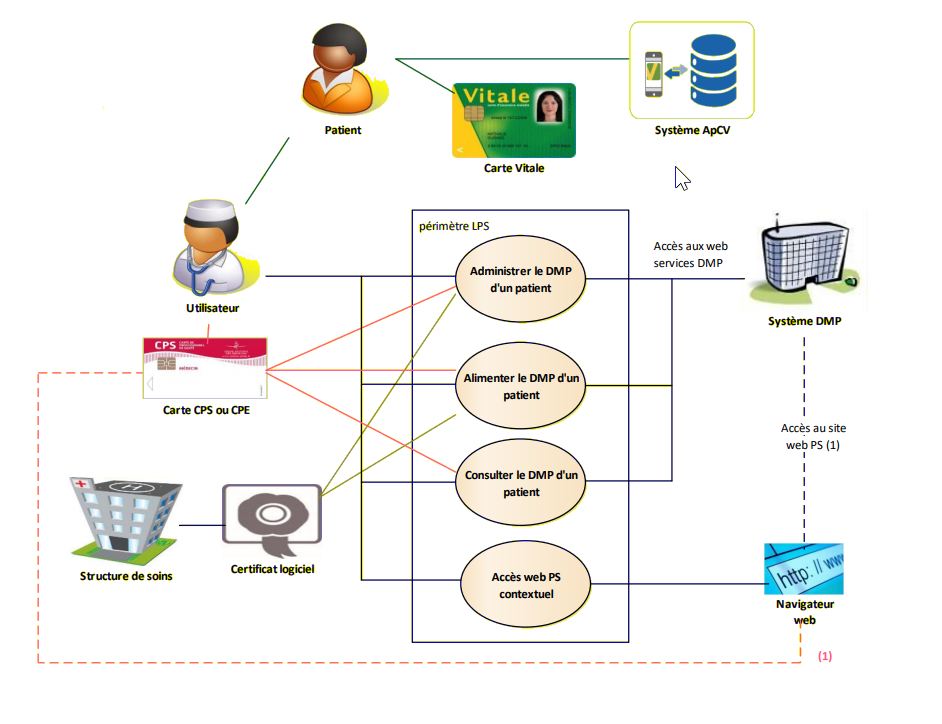

DMP
Le DMP intégré aux LPS
La DevBox-santé DMP est une api Java dont tous les composants sont injectables dans un environnement SpringFramework.
Elle suit le guide d’intégration définit par le GIE SESAM-Vitale : https://www.sesam-vitale.fr/documents/20182/54758/SEL-MP-037+DMPi.pdf
Ces composants sont tous basés sur des librairies de l’opensource comme Joda-time, Log4j, Apache Santuario, Apache CXF… .
Connecteur ou API embarquée
1 - Embedded : Premier Pas
Intégrer directement dans votre application spring-boot
Un projet de démonstration d’utilisation de la DevBox-santé DMP en mode embedded se trouve : https://bitbucket.org/devbox-sante/dmpc-demo
Installer
l’utilisation de cette API ne nécessite pas d’installation. Il suffit d’ajouter les dépendances adequates dans votre projet Maven / Gradle.
<dependencies>
<dependency>
<groupId>fr.devboxsante.dmp</groupId>
<artifactId>dmp-api</artifactId>
<version>${dmp-api.version}</version>
</dependency>
<dependency>
<groupId>fr.devboxsante.dmp</groupId>
<artifactId>dmp-client-impl</artifactId>
<version>${dmp.version}</version>
</dependency>
Écrire votre première intégration
Initialisation du client
La DevBox-Santé DMP est une application spring, pour obtenir un client DMP, il faut
injecter dans l’application la classe implémentant l’interface DMPCClient
par les mécanismes CDI de spring.
@Component
public class MonComposantDMP {
@Autowired
private DMPCClient client;
}
Une méthode dans le composant
// Initialisation d'un PS auteur des différentes transactions
DMPCAuthor ps1 = new DMPCAuthor("1234", "Dupont", "Pierre");
ps1.setRole("Médecin");
ps1.setStructureNom("Clinique du beau Soleil");
// Test d'existence (recherche) d'un patient
DMPCPatient patient = client.td02Exist(new TD02Request("0404312364978044945679")).getPatient();
// Initialisation d'un document à soumettre au DMP
DMPCDocument document = new DMPCDocument();
document.setTitle("Titre du document concernant l'hépatite virale");
document.setContent("Contenu textuel");
document.addEvent(new DMPCCode("B18", "2.16.840.1.113883.6.3", "Hépatite virale chronique"));
document.setFormat(client.getCodesFor(DMPCCode.ANSJeuxValeurs.FORMAT_CODE).get(1).getCode());
// …
// Création de l'enveloppe de soumission
DMPCSubmission submission = new DMPCSubmission();
submission.addDocument(document);
submission.setPatient(patient);
// Envoi vers le DMP de la soumission.
TD21Response td21Response = client.td21SubmitDocuments(context, new TD21Request(submission));
System.out.println("Soumission enregistré avec l'uuid :" + td21Response.getSubmission().getUuid());
Diagrammme de séquences correspondant
!include https://bitbucket.org/devbox-sante/plantuml/raw/current/themes/theme-devbox-sante.puml
== Initialisation ==
DMPCClient -> DMPCClient : readCertificates
DMPCClient -> DMPCClient : generate VIHF
DMPCClient -> DMP: init TLS connexion(securise)
== Test d'existence ==
DMPCClient -> DMP : td02Exist("279035121518989")
DMP --> DMPCClient : retourne un patient
== Soumission ==
DMPCClient -> DMP : td21SubmitDocuments(new Document("hepatite virale")
DMP --> DMPCClient : acknowledge
Les différents objets du modèle
Afin de transmettre les métadonnées nécessaires aux DMP pendant les différentes
transactions, la DevBox-Santé DMP contient un modèle métier dont les classes principales suivantes :
DMPCCodeDMPCPersonnelSanteDMPCPatientDMPCDocumentDMPCSubmission
DMPCCode
Un DMPCCode est la structure de base pour toute codification.
Une fois un DMPCClient initialisé, il est possible d’obtenir toutes les
nomenclatures standard depuis l’enum DMPCCode.ANSJeuxValeurs.
Exemple de récupération d’un DMPCCode :
// Je m'intéresse à la nomenclature SubjectRole
List<DMPCCode> roles = client.getCodesFor(DMPCCode.ANSJeuxValeurs.SUBJECT_ROLE);
// liste de tous les codes SubjetRole
for (DMPCCode role : roles) {
System.out.println("role :" + role);
}
Initialisation du contexte
L’API étant stateless un contexte doit être rappelé pour chaque transaction vers le DMP.
Un contexte peut être définit de la manière suivante :
DMPCContext context = new DMPCContext();
DMPCPersonnelSante ps1 = // initialisation d'un personnel de santé responsable de la transaction vers le DMP
context.setAuthor(ps1);
Exemple d’utilisation du contexte dans le cadre d’un test d’existence
client.td02Exist(context, new TD02Request(patient));
Transactions
L’ensemble des transactions sont décrites dans le document transactions
2 - REST Proxy
Les transactions du DMP en mode REST
Le proxy REST embarque l’API java dans une application REST spring-boot, elle accepte des requetes simples JSON et les retransmet
au DMP dans le bon formalisme et dans le respect des différentes transactions, il interprète les réponses du serveur DMP et les retourne au client initial dans
un formalisme simplifié.
Intégration sur un environnement de démonstration
Vous pouvez commencer à intégrer la DevBox-Santé DMP depuis l’environnement de démonstration.
Pour cela vous pouvez :
Attention : seule l’authentification indirecte est supportée dans un environnement cloud.
Déploiement avec un Java Runtime Environnement
Pour démarrer le serveur, depuis une ligne de commande exécuter :
java -Dspring.config.location=application.yml -jar dmpc-proxy-rest.jar
Au lancement du serveur est chargé un fichier de configuration application.yml permettant de
charger différents KeyStore les informations concernant le LPS et le serveur DMP.
Il est initialisé par défaut sur un environnement de test.
Une fois démarré, le serveur est accessible à l’url suivante : http://127.0.0.1:8080/proxy
Pour obtenir, le schéma Swagger : http://127.0.0.1:8080/swagger-ui.html

Intégration d’une image docker
Une page de documentation dédié : Docker
Utilisation de l’installer DevBox-Santé
Une page de documentation dédié : poste_client
3 - Authentifications
Les différentes mécanismes d’authentifications et architectures possibles avec le DMP
Introduction
Une des difficultés d’intégration avec le DMP consiste à établir une connexion SSL (TLS) en authentification mutuelle avec le DMP.
Contrairement aux connexions SSL classiques que nous pouvons avoir avec n’importe quel site, non seulement le DMP doit prouver son identité mais aussi le client qui s’y connecte.
Cela signifie que l’opération Certificate Verify dans le schéma doit être réalisé :

Cette étape consiste à ce que le client signe un handshake provenant du serveur avec une clé privé provenant d’une IGC (Infrastructure de Gestion de Clés) reconnue par le DMP : l’IGC Santé.
Celà permet de définir deux modes d’authentification dans le DMP :
- l’authentification indirecte par l’usage d’un fichier p12 certificat serveur provenant de l’IGC santé
- l’authentification directe par l’usage d’une carte CPS

Ces deux modes d’authentification, peuvent se dériver en différentes architectures en fonction du contexte de l’intégrateur.
3.1 - Authentification Indirecte (via certificat serveur)
Accéder au DMP via un certification d’établissement
Il s’agit de l’authentification par certificat serveur provenant de l’IGC Santé (Infrastructure de gestion de clés) qui est délivré aux différents établissements de santé.
Une documentation pour obtenir des certificats serveurs se trouve ici.
Ce mode d’authentification ne permet que l’alimentation de documents dans le DMP et pas la consultation.
Description scénario : L’intégrateur héberge le Proxy DevBox-santé dans son environnement, et l’intégre comme une passerelle vers le DMP.
Version REST
Diagramme de composants
!include https://bitbucket.org/devbox-sante/plantuml/raw/current/themes/theme-devbox-sante.puml
[FrontEnd intégrateur] as frontend
node "Environnement intégrateur" {
[BackEnd intégrateur] as backend
package "DevBox-Santé Proxy REST" DEVBOX_COLOR {
package "DevBox-sante DMP" as dmpFacade DMP_COLOR {
[P12Manager] as P12Manager DMP_COLOR
}
}
}
cloud "**DMP**" as DMP
frontend -down-> backend
backend -right-> dmpFacade: REST
dmpFacade -down-> DMP : SOAP
Version Embedded
Diagramme de composants
L’architecture du mode embedded peut être représentée par ce schéma :
!include https://bitbucket.org/devbox-sante/plantuml/raw/current/themes/theme-devbox-sante.puml
[FrontEnd intégrateur] as frontend
node "Environnement intégrateur" {
component "BackEnd intégrateur" as backend {
component "DevBox-Santé DMP" as DMPC_API DMP_COLOR {
[P12Manager] as P12Manager DMP_COLOR
}
}
}
cloud "**DMP**" as DMP
frontend -down-> backend
DMPC_API -d-> DMP : SOAP XDS / CDA
3.2 - Authentification Directe (via carte CPx)
Authentification directe en utilisant les cartes CPx (CPS/CPE…) et la cryptolib
Ce mode d’authentification nécessite l’installation sur le poste client d’un lecteur de carte CPS ainsi que le composant DevBox-santé. Le professionnel de santé doit posséder une carte CPS.
Scénario possible : Le frontend/client lourd s’exécutant sur le poste client de l’utilisateur accède au DMP grâce à la DevBox-Santé DMP installé sur le poste client.
Version REST
Diagramme de composants
!include https://bitbucket.org/devbox-sante/plantuml/raw/current/themes/theme-devbox-sante.puml
node "Poste Client (Windows/Mac/Linux)" {
[FrontEnd intégrateur] as frontend
package "DevBox-Santé Proxy REST" DEVBOX_COLOR {
component "DevBox-sante DMP" as dmpFacade #35D9C0 {
[DevBox-sante CPS] as cps #D34A3C
}
}
[Cryptolib CPS (ANS)] as cryptolibCPS
}
[BackEnd intégrateur] as backend
cloud "**DMP**" as DMP
frontend -right-> dmpFacade : REST
cps <-up-> cryptolibCPS : appel natif
dmpFacade -down-> DMP : SOAP
frontend -down-> backend
Version Embedded
Diagramme de composants
!include https://bitbucket.org/devbox-sante/plantuml/raw/current/themes/theme-devbox-sante.puml
node "Poste Client (Windows/Mac/Linux)" {
component "Client de l'intégrateur" {
component "DevBox-Santé Proxy REST" DEVBOX_COLOR {
component "DevBox-sante DMP" as dmpFacade #35D9C0 {
[DevBox-sante CPS] as cps #D34A3C
}
}
}
[Cryptolib CPS (ANS)] as cryptolibCPS
}
cloud "**DMP**" as DMP
cps <--> cryptolibCPS : appel natif
dmpFacade --> DMP : SOAP
Diagramme de séquences
!include https://bitbucket.org/devbox-sante/plantuml/raw/current/themes/theme-devbox-sante.puml
box "Poste Client"
participant frontend
participant "DevBox-Santé DMP" as dbxdmp DMP_COLOR
participant "DevBox-Santé CPS" as dbxCps CPS_COLOR
end box
participant "**DMP**" as dmp
frontend -> dbxdmp : /dmp/td21SubmitDocuments
== initialisation d'une connexion SSL en authentification mutuelle avec le DMP ==
dbxdmp -> "DMP" as dmp : [SSL] 1. Client Hello
dmp -> dbxdmp : [SSL] 2. Server Hello (certificat du DMP server inclus)
dmp -> dbxdmp : [SSL] 3. Client certificate request
dbxdmp -> dbxCps : readAuthenticationCertificate
dbxCps -> dbxdmp : {certificate authentification}
dbxdmp -> dmp : [SSL] 4. Client certificate
dbxdmp -> dmp : [SSL] 5. Client sends key info \n(encrypted with DMP server public's key)
dbxdmp -> dbxCps : signForAuthentication(SHA256WithRSA, hanshake data)
dbxCps -> dbxdmp : {signed handshake data}
dbxdmp -> dmp : [SSL] 6. Certificate verify \n (with Digital Signature)
dbxdmp -> dmp : [SSL] 7. Finnished message \n (encrypted with symmetric key)
dmp -> dbxdmp : [SSL] 8. Finnished message \n (encrypted with symmetric key)
== fin de l'initialisation de la connexion ssl avec le DMP ==
dbxdmp -> dmp : POST SOAP message de soumission (XDS/CDA)
dmp -> dbxdmp : SOAP response OK
dbxdmp -> frontend : ok
3.3 - Authentification Directe via le CPS Agent
Authentification via le CPS Agent (Démon sur le poste client minimaliste)
Authentification Directe avec CPS Agent
Scenario possible : Le frontend de l’intégrateur, passe le contexte d’authentification de la DevBox-Santé CPS agent se trouvant sur le poste client au backend. Le backend initie une session TLS/SSL avec le serveur DMP grâce au CpsAgentClient.
Diagramme de composants
!include https://bitbucket.org/devbox-sante/plantuml/raw/current/themes/theme-devbox-sante.puml
node "Poste Client (Windows/Mac/Linux)" {
[FrontEnd intégrateur] as frontend
package "DevBox-Santé Proxy REST" as cpsAgent DEVBOX_COLOR {
[DevBox-sante CPS] as cps CPS_COLOR
}
[Cryptolib CPS (ANS)] as cryptolibCPS
}
node "Environnement intégrateur" {
[BackEnd intégrateur] as backend
package "DevBox-Santé Proxy REST" DEVBOX_COLOR {
component "DevBox-sante DMP" as dmpFacade DMP_COLOR {
[CpsAgentClient] CPS_COLOR
}
}
}
cloud "**DMP**" as DMP
frontend -d-> backend : 1
backend -d-> dmpFacade : 2
CpsAgentClient -> cpsAgent : 3
cps -down-> cryptolibCPS : 4
dmpFacade -down-> DMP : 5
Diagramme de séquences
!include https://bitbucket.org/devbox-sante/plantuml/raw/current/themes/theme-devbox-sante.puml
box "Poste Client"
participant frontend
participant cpsAgent CPS_COLOR
end box
box "Environnement intégrateur" #white
participant "DevBox-Santé DMP" as dbxdmp DMP_COLOR
participant backend
end box
participant "**DMP**" as dmp
frontend -> backend : storeDocumentPatient
backend -> dbxdmp : /dmp/td21SubmitDocuments
== initialisation d'une connexion SSL en authentification mutuelle avec le DMP ==
dbxdmp -> "DMP" as dmp : [SSL] 1. Client Hello
dmp -> dbxdmp : [SSL] 2. Server Hello (certificat du DMP server inclus)
dmp -> dbxdmp : [SSL] 3. Client certificate request
dbxdmp -> cpsAgent : HTTP GET /cps/authenticationCertificate
cpsAgent -> dbxdmp : {certificate authentification}
dbxdmp -> dmp : [SSL] 4. Client certificate
dbxdmp -> dmp : [SSL] 5. Client sends key info \n(encrypted with DMP server public's key)
dbxdmp -> cpsAgent : HTTP POST /cps/sign/for/authentication/SHA256WithRSA body : {handshake data}
cpsAgent -> dbxdmp : {signed handshake data}
dbxdmp -> dmp : [SSL] 6. Certificate verify \n (with Digital Signature)
dbxdmp -> dmp : [SSL] 7. Finnished message \n (encrypted with symmetric key)
dmp -> dbxdmp : [SSL] 8. Finnished message \n (encrypted with symmetric key)
== fin de l'initialisation de la connexion ssl avec le DMP ==
dbxdmp -> dmp : POST SOAP message de soumission (XDS/CDA)
dmp -> dbxdmp : SOAP response OK
dbxdmp -> backend : HTTP 200 Ok
backend -> frontend : ok
3.4 - Authentification Directe via OLAQIN TAAS (Terminal As A Service)
Un autre moyen d’authentification OLAQIN TAAS (Terminal As A Service) via les APIs des serveurs HDS Stellair
OLAQIN TAAS (Terminal As A Service) est une technologie développée par la société OLAQIN qui permet aux APIs de la DevBox-Santé DMP d’accéder à des terminaux OLAQIN via le réseau Internet.
Les terminaux OLAQIN compatibles avec la technologie OLAQIN TAAS fournit des accès aux cartes Vitale et CPS au travers d’API.

Pour l’accès aux cartes Vitale, Olaqin s’appuie sur son homologation « Lecture Vitale » (via l’option API). Pour l’accès aux cartes des Professionnels de Santé, Olaqin s’appuie sur les développements réalisés dans le cadre de son homologation « Dispositif Intégré ».
Intégration dans la DevBox-santé
Vous pouvez donc installer votre solution DevBox-santé DMP dans votre environnement serveur HDS et utiliser les terminaux Olaqin.
!include https://bitbucket.org/devbox-sante/plantuml/raw/current/themes/theme-devbox-sante.puml
node "Environnement Utilisateur" {
package "Poste client / mobile" {
[FrontEnd intégrateur] as frontend
}
[Lecteur Neo] as lecteur
}
node "Environnement intégrateur HDS" {
[BackEnd intégrateur] as backend
package "DevBox-Santé Proxy REST" DEVBOX_COLOR {
component "DevBox-sante DMP" as dmpFacade #35D9C0 {
[DevBox-sante CPS security Stellair] as cpsStellair #D34A3C
}
}
}
cloud "**Stellair** API" as stellair
cloud "**DMP**" as DMP
frontend -up-> backend : REST
backend -> dmpFacade : REST
cpsStellair -> stellair: REST
stellair <-> lecteur : Demande d'autorisation d'accès aux cartes via le SSO Stellair
dmpFacade -> DMP : SOAP
Diagramme de séquences
!include https://bitbucket.org/devbox-sante/plantuml/raw/current/themes/theme-devbox-sante.puml
box "Environnement utilisateur"
participant "Poste client" as frontend
participant "Lecteur Neo" as lecteur
end box
box "Environnement intégrateur" #white
participant backend
participant "DevBox-Santé DMP" as dbxdmp DMP_COLOR
end box
participant "**DMP**" as dmp
participant "**Stellair**" as stellair
frontend -> backend : storeDocumentPatient
backend -> dbxdmp : /dmp/td21SubmitDocuments
== initialisation d'une connexion SSL en authentification mutuelle avec le DMP ==
dbxdmp -> "DMP" as dmp : [SSL] 1. Client Hello
dmp -> dbxdmp : [SSL] 2. Server Hello (certificat du DMP server inclus)
dmp -> dbxdmp : [SSL] 3. Client certificate request
dbxdmp -> stellair : HTTP GET /cps/certificate/auth
...
stellair <-> lecteur
...
stellair -> dbxdmp : {certificate authentification}
dbxdmp -> dmp : [SSL] 4. Client certificate
dbxdmp -> dmp : [SSL] 5. Client sends key info \n(encrypted with DMP server public's key)
dbxdmp -> stellair : HTTP POST /cps/certificate/auth body : {handshake data}
...
stellair <-> lecteur
...
stellair -> dbxdmp : {signed handshake data}
dbxdmp -> dmp : [SSL] 6. Certificate verify \n (with Digital Signature)
dbxdmp -> dmp : [SSL] 7. Finnished message \n (encrypted with symmetric key)
dmp -> dbxdmp : [SSL] 8. Finnished message \n (encrypted with symmetric key)
== fin de l'initialisation de la connexion ssl avec le DMP ==
dbxdmp -> dmp : POST SOAP message de soumission (XDS/CDA)
dmp -> dbxdmp : SOAP response OK
dbxdmp -> backend : HTTP 200 Ok
backend -> frontend : ok
4 - Structuration des documents
Les différents formats CDA supportés
Il est possible dans le DMP de soumettre une multitude de type de document structurés dans le format CDA. Ces documents sont spécifiés dans l’Espace de publication du Cadre d’Interopérabilité des Systèmes d’Information de Santé
Glossaire
- CDA : Clinical Document Architecture
4.1 - Volet CDA structuration minimale
Volet CDA de Structuration minimale
La DevBox-Santé DMP prend en charge la soumission de document à structuration minimale.
Il s’agit du format par défaut exigé par le Guide d’intégration , il contient les métadonnées de
base permettant la création d’un DMPCDocument ainsi que son contenu binaire.
La spécification de ce type de document est défini par l’ANS. Pour plus de renseignements sur le Volet Structuration minimal de Documents de santé : https://esante.gouv.fr/volet-structuration-minimale-de-documents-de-sante
Un exemple de création de document à structuration minimale est :
DMPCDocument document = new DMPCDocument();
// ajout des métadonnées
document.setClassCode(client.getCodesFor(DMPCCode.ASIPJeuxValeurs.CLASS_CODE).get(0).getCode());
document.addConfidentiality(client.getCodesFor(DMPCCode.ASIPJeuxValeurs.CONFIDENTIALITY_CODE).get(0).getCode());
document.setComments("commentDocument");
document.addEvent(new DMPCCode("B18", "2.16.840.1.113883.6.3", "Hépatite virale chronique"));
document.setPracticeSetting(client.getCodesFor(DMPCCode.ASIPJeuxValeurs.PRACTICE_SETTING_CODE).get(0).getCode());
document.setServiceStartTime("20171020174600");
document.setServiceStopTime("20171020194600");
document.setTitle("titleDocument");
document.setType(client.getCodesFor(DMPCCode.ASIPJeuxValeurs.TYPE_CODE).get(0).getCode());
document.setCreationTime("20171020194600");
// association du format et de son contenu. Ici, il s'agit d'un fichier pdf.
document.setFormat("urn:ihe:iti:xds-sd:pdf:2008");
InputStream input = new FileInputStream("monDocumentSante.pdf");
byte[] content = new byte[input.available()];
ByteStreams.readFully(input, content);
document.setContent(content);
Listes des formats possibles :
urn:ihe:iti:xds-sd:pdf:2008urn:ihe:iti-fr:xds-sd:rtf:2010urn:ihe:iti-fr:xds-sd:jpeg:2010urn:ihe:iti-fr:xds-sd:tiff:2010- …
Pour plus de renseignements sur l’API java du DMPCDocument : https://bitbucket.org/devbox-sante/dmpc-api/src/master/src/main/java/fr/devboxsante/dmp/model/DMPCDocument.java
Exemple de DMPCDocument au format Json :
{
"classCode": "11",
"comments": "Document soumis via Postman",
"confidentialities": ["N"],
"content": "UmFwcGVsIGNsaW5pcXVlIDogSWwgcydhZ2l0IGQndW4gaG9tbWUgZGUgNTMgYW5zLCAKcHLDqXNlbnRhbnQgdW4gbmFldnVzIGRlIGxhIGZhY2UgaW50ZXJuZSBkZSBsYSBjdWlzc2UgZ2F1Y2hlIGRlIDcgbW0gZGUgZ3JhbmQgYXhlIGVudmlyb24uIApEw6ljaXNpb24gZCdleMOpcsOoc2Ugc291cyBhbmVzdGjDqXNpZSBsb2NhbGUuIAoKSW50ZXJ2ZW50aW9uIDogRVhFUkVTRSBEJ1VOIE5BRVZVUyBERSBMQSBDVUlTU0UgR0FVQ0hFIApTb3VzIGFuZXN0aMOpc2llIGxvY2FsZSDDoCBsYSBYeWxvY2HDr25lIMOgIDEgJSBub24gYWRyw6luYWxpbsOpZS4gCgpJbmNpc2lvbiBjZW50csOpZSBzdXIgbGEgbMOpc2lvbiBwZXJtZXR0YW50IGwnZXjDqXLDqHNlIGR1IG5hZXZ1cyBkYW5zIHNhIHRvdGFsaXTDqS4gCkZlcm1ldHVyZSBjdXRhbsOpZSBlbiB1biBwbGFuIGRlIEZsZXhvY3JpbiAzLzAuICAKCkVYQU1FTiBISVNUT0xPR0lPVUUgVW5lIGzDqXNpb24gcG9seXBvw69kZSBkZSAxIHggMCw3IGNtIGEgw6l0w6kgY29tbXVuaXF1w6llLiAKT24gcmV0cm91dmUgYXUgcGxhbiBoaXN0b2xvZ2lxdWUgdW5lIGzDqXNpb24gdW4gcGV1IHZlcnJ1cXVldXNlLCAKY29tcG9ydGFudCB1bmUgcHJvbGlmw6lyYXRpb24gY2VsbHVsYWlyZSBuYWV2aXF1ZSDDqXBhcmduYW50IGwnw6lwaWTDqW1pZSwgCnNvdXMgZm9ybWUgZGUgdGjDqHF1ZXMgZW4gc3VyZmFjZSwgYXZlYyBxdWVscXVlcyBkw6lww7R0cyBkZSBtw6lsYW5pbmUsIAphc3NvY2nDqWUgw6AgdW4gZ3JhZGllbnQgZGUgbWF0dXJhdGlvbiB0csOocyBuZXQgdmVycyBsYSBwcm9mb25kZXVyLiAKCk9uIG5lIHJldHJvdXZlIHBhcyBkJ2F0eXBpZSBudWNsw6lvY3l0b3BsYXNtaXF1ZS4gCgpDT05DTFVTSU9OIE5BRVZVUyBERVJNSVFVRSBERVZFTE9QUEUgU1VSIFVOIE1PREUgRVhPUEhZVElRVUUgLiAKTEVTIExJTUlURVMgRCdFWEVSRVNFIFNPTlQgU0FJTkVTLiA=",
"creationTime": "20200928120000",
"events": [
{
"code": "H33",
"codingScheme": "2.16.840.1.113883.6.3",
"displayName": "Décollement et déchirement de la rétine"
}
],
"format": "urn:ihe:iti:xds-sd:text:2008",
"legalAuthenticator": {
"internalId": "123456",
"nom": "Durand",
"prenom": "Pierre"
},
"patient": {
"ins": "279035121518989",
"prenom": "DOMINIQUE",
"nomUsuel": "pat-trois",
"internalId": "67890",
"dateDeNaissance": "19790328",
"ordreDeNaissance": 0,
"sexe": "F"
},
"practiceSetting": "AMBULATOIRE",
"serviceStartTime": "20200928080000",
"serviceStopTime": "20200928080000",
"title": "Titre du document",
"type": "11488-4"
}
Alimenter le DMP
C’est ce DMPCDocument qui permet l’alimentation du DMP au travers de la transaction d’alimentation
Générer un CDA
@Since DMP-4.7.0
Il est également possible de transformer ce DMPCDocument en un CDA en vue de le partager avec un autre Système d’information comme la MSS par exemple.
Exemple en Java :
@Autowired
private DMPCCdaTools cdaTools;
// ...
DMPCDocument document = createDMPCDocument(auteur, patient);
OutputStream out = new ByteArrayOutputStream();
cdaTools.map(document, out);
System.out.println(out.toByteArray());
Exemple en REST :
curl --location --request POST 'http://127.0.0.1:8686/dmp/to/cda' \
--header 'Content-Type: application/json' \
--data-raw '{
"entryUuid": "c2811791-1773-4325-9abf-a2f2d09ccfc9",
"uniqueId": "1.2.250.1.287.11234",
"secteurActivite": "SA43",
"auteurs": [
{
"internalId": "123456",
"nom": "Durand",
"prenom": "Pierre",
"specialite": "G15_10/SM30",
"secteurActivite": "SA43",
"structureSante": {
"idNational": "12345",
"nom": "Devcoop Bureau de Léognan"
}
}
],
"classCode": "11",
"comments": "Document soumis via Postman",
"confidentialities": [
"N"
],
"content": "UmFwcGVsIGNsaW5pcXVlIDogSWwgcydhZ2l0IGQndW4gaG9tbWUgZGUgNTMgYW5zLCAKcHLDqXNlbnRhbnQgdW4gbmFldnVzIGRlIGxhIGZhY2UgaW50ZXJuZSBkZSBsYSBjdWlzc2UgZ2F1Y2hlIGRlIDcgbW0gZGUgZ3JhbmQgYXhlIGVudmlyb24uIApEw6ljaXNpb24gZCdleMOpcsOoc2Ugc291cyBhbmVzdGjDqXNpZSBsb2NhbGUuIAoKSW50ZXJ2ZW50aW9uIDogRVhFUkVTRSBEJ1VOIE5BRVZVUyBERSBMQSBDVUlTU0UgR0FVQ0hFIApTb3VzIGFuZXN0aMOpc2llIGxvY2FsZSDDoCBsYSBYeWxvY2HDr25lIMOgIDEgJSBub24gYWRyw6luYWxpbsOpZS4gCgpJbmNpc2lvbiBjZW50csOpZSBzdXIgbGEgbMOpc2lvbiBwZXJtZXR0YW50IGwnZXjDqXLDqHNlIGR1IG5hZXZ1cyBkYW5zIHNhIHRvdGFsaXTDqS4gCkZlcm1ldHVyZSBjdXRhbsOpZSBlbiB1biBwbGFuIGRlIEZsZXhvY3JpbiAzLzAuICAKCkVYQU1FTiBISVNUT0xPR0lPVUUgVW5lIGzDqXNpb24gcG9seXBvw69kZSBkZSAxIHggMCw3IGNtIGEgw6l0w6kgY29tbXVuaXF1w6llLiAKT24gcmV0cm91dmUgYXUgcGxhbiBoaXN0b2xvZ2lxdWUgdW5lIGzDqXNpb24gdW4gcGV1IHZlcnJ1cXVldXNlLCAKY29tcG9ydGFudCB1bmUgcHJvbGlmw6lyYXRpb24gY2VsbHVsYWlyZSBuYWV2aXF1ZSDDqXBhcmduYW50IGwnw6lwaWTDqW1pZSwgCnNvdXMgZm9ybWUgZGUgdGjDqHF1ZXMgZW4gc3VyZmFjZSwgYXZlYyBxdWVscXVlcyBkw6lww7R0cyBkZSBtw6lsYW5pbmUsIAphc3NvY2nDqWUgw6AgdW4gZ3JhZGllbnQgZGUgbWF0dXJhdGlvbiB0csOocyBuZXQgdmVycyBsYSBwcm9mb25kZXVyLiAKCk9uIG5lIHJldHJvdXZlIHBhcyBkJ2F0eXBpZSBudWNsw6lvY3l0b3BsYXNtaXF1ZS4gCgpDT05DTFVTSU9OIE5BRVZVUyBERVJNSVFVRSBERVZFTE9QUEUgU1VSIFVOIE1PREUgRVhPUEhZVElRVUUgLiAKTEVTIExJTUlURVMgRCdFWEVSRVNFIFNPTlQgU0FJTkVTLiA=",
"creationTime": "20200928120000",
"events": [
{
"code": "H33",
"codingScheme": "2.16.840.1.113883.6.3",
"displayName": "Décollement et déchirement de la rétine"
}
],
"format": "urn:ihe:iti:xds-sd:text:2008",
"legalAuthenticator": {
"internalId": "123456",
"nom": "Durand",
"prenom": "Pierre",
"secteurActivite": "SA43",
"structureSante": {
"idNational": "12345",
"nom": "Devcoop Bureau de Léognan"
}
},
"patient": {
"ins": "279035121518989",
"insAutorite": "1.2.250.1.213.1.4.10",
"prenom": "DOMINIQUE",
"nomUsuel": "pat-trois",
"internalId": "67890",
"dateDeNaissance": "19790328",
"ordreDeNaissance": 0,
"sexe": "F"
},
"practiceSetting": "AMBULATOIRE",
"serviceStartTime": "20200928080000",
"serviceStopTime": "20200928080000",
"title": "Titre du document",
"type": "11488-4"
}'
La réponse contientdra un fichier CDA conforme au schematron de l’ANS : cda_structuration_minimale.xml
4.2 - Volet Compte rendu d'examens de biologie
La DevBox-Santé DMP prend également en charge la soumission de document structure comme le CR d’examens biologie.
Ce format de document est spécifié par l’ANS : https://esante.gouv.fr/volet-cr-bio-compte-rendu-dexamens-de-biologie-medicale
Un exemple de création de document conforme à la spécification est :
private void createCRBiologie(DMPCStructureSante structureSante) {
final String creationTime = "20111020194600";
final String startTime = "20140520174600";
final String stopTime = "20140520184600";
DMPCDocumentCRBiologie template = new DMPCDocumentCRBiologie();
template.setClassCode("10");
template.addConfidentiality("N");
template.setComments("Commentaire du document");
template.setFormat("urn:ihe:lab:xd-lab:2008"); // format obligatoire
template.setPracticeSetting("AMBULATOIRE");
template.setServiceStartTime(startTime);
template.setServiceStopTime(stopTime);
template.setTitle("Titre CRBiologie");
template.setType("11502-2");
template.setCreationTime(creationTime);
template.addEvent(new DMPCCode("16915-1", OIDs.LOINC.getRepresentation(), "Glucose post prandial [Masse/Volume] Sérum/Plasma ; Numérique"));
final Participation prescription = new Participation();
final DMPCPersonnelSante prescripteur = new DMPCPersonnelSante();
prescripteur.setAdeli("801234567897");
prescripteur.setNom("Gynecon");
prescripteur.setPrenom("Eve");
prescripteur.setStructureSante(structureSante);
prescripteur.setTelephone("0147150000");
prescription.setPersonnelSante(prescripteur);
prescription.setStopTime(startTime);
template.setPrescription(prescription);
final Participation prelevement = new Participation();
final DMPCPersonnelSante preleveur = new DMPCPersonnelSante();
preleveur.setAdeli("801234567897");
preleveur.setNom("Bleeder");
preleveur.setPrenom("Roberta");
preleveur.setStructureSante(structureSante);
prelevement.setPersonnelSante(preleveur);
prelevement.setStopTime(stopTime);
template.setPrelevement(prelevement);
template.setId("1234");
template.setVersionNumber(0);
final StructuredBody.ChapterSection chapterSection = new StructuredBody.ChapterSection();
chapterSection.setLoincCode(ChapterSectionLoincCode.BIOLOGIE.getCode());
template.getBody().getChapterSections().add(chapterSection);
final StructuredBody.Section section = new StructuredBody.Section();
chapterSection.getSections().add(section);
section.setAuthenticator(prescripteur);
section.setAuthenticatorInterpretation("Commentaire habituel");
final StructuredBody.Observation observation = new StructuredBody.Observation();
observation.setCode(new DMPCCode("16915-1", OIDs.LOINC.getRepresentation(), "Glucose post prandial [Masse/Volume] Sérum/Plasma ; Numérique"));
observation.setStatus("completed");
observation.setTime(stopTime);
final StructuredBody.Value value = new StructuredBody.Value();
value.setValue("1.5");
value.setUnit("g/L");
observation.setValue(value);
observation.setInterpretation(new DMPCCode("H", Hl7OIDs.OBSERVATION_INTERPRETATION.getRepresentation(), "Anormalement haut"));
final StructuredBody.RangeValue rangeValue = new StructuredBody.RangeValue();
rangeValue.setLow("0.8");
rangeValue.setHigh("1.26");
rangeValue.setUnit("g/L");
observation.setReferenceRange(rangeValue);
section.getObservations().add(observation);
}
La génération un peu longue certe permet de rajouter les sections et observations nécessaires pour générer le document CDA suivant :
<?xml version="1.0" encoding="UTF-8" standalone="yes"?>
<ClinicalDocument xmlns="urn:hl7-org:v3" xmlns:xsi="http://www.w3.org/2001/XMLSchema-instance" xsi:schemaLocation="http://www.w3.org/2001/XMLSchema-instance">
<realmCode code="FR"/>
<typeId root="2.16.840.1.113883.1.3" extension="POCD_HD000040"/>
<templateId root="2.16.840.1.113883.2.8.2.1" assigningAuthorityName="HL7 France"/>
<templateId root="1.2.250.1.213.1.1.1.1" assigningAuthorityName="Cadre InteropASIP"/>
<templateId root="1.3.6.1.4.1.19376.1.2.20" assigningAuthorityName="Template identifier for an XDS-SD document"/>
<templateId root="1.3.6.1.4.1.19376.1.3.3" assigningAuthorityName="Laboratory Report Summary Specification"/>
<id root="1.2.250.1.287.1.123456.1400919121980.0"/>
<code code="11502-2" codeSystem="2.16.840.1.113883.6.1" displayName="CR d'examens biologiques"/>
<title>document titre</title>
<effectiveTime value="20140524101200+0200"/>
<confidentialityCode code="N" codeSystem="2.16.840.1.113883.5.25" displayName="Normal"/>
<languageCode code="fr-FR"/>
<versionNumber value="0"/>
<recordTarget>
<patientRole>
<id root="1.2.250.1.213.1.4.2" extension="1164485058822081751070"/>
<id root="1.2.250.1.287.1.123456" extension="1234"/>
<addr nullFlavor="NASK"/>
<telecom nullFlavor="NASK"/>
<patient>
<name>
<given>prenom</given>
<family qualifier="BR">nom</family>
<family qualifier="SP">nomEpouse</family>
</name>
<administrativeGenderCode code="M" codeSystem="2.16.840.1.113883.5.1"/>
<birthTime value="19730513"/>
</patient>
</patientRole>
</recordTarget>
<author>
<functionCode code="10" codeSystem="1.2.250.1.71.1.2.7" displayName="Médecin"/>
<time value="20140524101200+0200"/>
<assignedAuthor>
<id root="1.2.250.1.71.4.2.1" extension="500000000015644/123"/>
<code code="G15_10/SM30" codeSystem="1.2.250.1.213.1.1.4.5" displayName="Médecin - Néphrologie (SM)"/>
<addr nullFlavor="NASK"/>
<assignedPerson>
<name>
<given>auteurPrenom</given>
<family qualifier="BR">auteurNom</family>
</name>
</assignedPerson>
<representedOrganization>
<id root="1.2.250.1.71.4.2.2" extension="300000000015644"/>
<name>structureNom</name>
</representedOrganization>
</assignedAuthor>
</author>
<custodian>
<assignedCustodian>
<representedCustodianOrganization>
<id root="1.2.250.1.71.4.2.2" extension="300000000015644"/>
<name>structureNom</name>
<telecom nullFlavor="NASK"/>
<addr nullFlavor="NASK"/>
</representedCustodianOrganization>
</assignedCustodian>
</custodian>
<legalAuthenticator>
<time value="20140524101200+0200"/>
<signatureCode code="S"/>
<assignedEntity>
<id root="1.2.250.1.71.4.2.1" extension="500000000015644/123"/>
<addr nullFlavor="NASK"/>
<telecom nullFlavor="NASK"/>
<assignedPerson>
<name>
<given>auteurPrenom</given>
<family qualifier="BR">auteurNom</family>
</name>
</assignedPerson>
</assignedEntity>
</legalAuthenticator>
<participant typeCode="REF">
<functionCode code="TODO"/>
<time>
<high value="20091113"/>
</time>
<associatedEntity classCode="PROV">
<id root="1.2.250.1.71.4.2.1" extension="801234567897"/>
<code nullFlavor="NASK"/>
<addr nullFlavor="NASK"/>
<telecom use="EC" value="tel:0147150000"/>
<associatedPerson>
<name>
<given>Eve</given>
<family qualifier="BR">Gynecon</family>
</name>
</associatedPerson>
</associatedEntity>
</participant>
<participant typeCode="DIST">
<functionCode code="PRELV"/>
<time/>
<associatedEntity classCode="CAREGIVER">
<id root="1.2.250.1.71.4.2.1" extension="801234567897"/>
<code nullFlavor="NASK"/>
<addr nullFlavor="NASK"/>
<telecom nullFlavor="NASK"/>
<associatedPerson>
<name>
<given>Roberta</given>
<family qualifier="BR">Bleeder</family>
</name>
</associatedPerson>
</associatedEntity>
</participant>
<documentationOf>
<serviceEvent>
<code code="H33" codeSystem="2.16.840.1.113883.6.3" displayName="Décollement et déchirement de la rétine"/>
<effectiveTime>
<low value="20111025"/>
<high value="20111125"/>
</effectiveTime>
<performer typeCode="PRF">
<functionCode nullFlavor="UNK"/>
<assignedEntity>
<id root="1.2.250.1.71.4.2.1" extension="500000000015644/123"/>
<addr nullFlavor="NASK"/>
<telecom nullFlavor="NASK"/>
<assignedPerson>
<name>
<given>auteurPrenom</given>
<family qualifier="BR">auteurNom</family>
</name>
</assignedPerson>
<representedOrganization>
<id root="1.2.250.1.71.4.2.2" extension="300000000015644"/>
<name>structureNom</name>
<telecom nullFlavor="NASK"/>
<addr nullFlavor="NASK"/>
<standardIndustryClassCode code="AMBULATOIRE" codeSystem="1.2.250.1.213.1.1.4.9" displayName="Ambulatoire"/>
</representedOrganization>
</assignedEntity>
</performer>
</serviceEvent>
</documentationOf>
<componentOf>
<encompassingEncounter>
<effectiveTime nullFlavor="UNK"/>
<location>
<healthCareFacility>
<code code="SA41" codeSystem="1.2.250.1.71.4.2.4" displayName="Autre établissement du domaine social "/>
</healthCareFacility>
</location>
</encompassingEncounter>
</componentOf>
<component>
<structuredBody>
<component>
<section>
<templateId root="1.3.6.1.4.1.19376.1.3.3.2.1"/>
<code code="18719-5" codeSystem="2.16.840.1.113883.6.1" displayName="Biochimie"/>
<title>Biochimie</title>
<component>
<section>
<templateId root="1.3.6.1.4.1.19376.1.3.3.2.2"/>
<code nullFlavor="NASK"/>
<text>
<table>
<thead>
<tr>
<td>Unité</td>
<td>Date</td>
<td>Valeur</td>
<td>Valeur Référence</td>
<td>Interprétation</td>
</tr>
</thead>
<tbody>
<tr>
<td>g/L</td>
<td>24/05/2014</td>
<td>1.5</td>
<td>0.8 - 1.26</td>
<td>></td>
</tr>
</tbody>
</table>
<paragraph>Interprétation : Résultats Validés par : auteurNom auteurPrenom - null</paragraph>
</text>
<entry>
<observation classCode="OBS" moodCode="EVN">
<code xsi:type="CE" code="16915-1" codeSystem="2.16.840.1.113883.6.1" displayName="Glucose post prandial [Masse/Volume] Sérum/Plasma ; Numérique"/>
<statusCode code="completed"/>
<effectiveTime value="20140524101202+0200"/>
<value xsi:type="PQ" value="1.5" unit="g/L"/>
<interpretationCode code=">" codeSystem="2.16.840.1.113883.5.83" displayName="Au dessus, hors échelle de l'instrument de mesure"/>
<methodCode nullFlavor="NASK"/>
<referenceRange typeCode="REFV">
<observationRange>
<value xsi:type="IVL_PQ">
<low value="0.8" unit="g/L"/>
<high value="1.26" unit="g/L"/>
</value>
</observationRange>
</referenceRange>
</observation>
</entry>
</section>
</component>
</section>
</component>
</structuredBody>
</component>
</ClinicalDocument>
4.3 - Vaccinations : Note et Historiques
Support des Notes et Historiques de Vaccination défini dans le Cadre d’Intéropérablité SIS de l’ANS
@Since DMP-5.0
Note de vaccination
Il est possible désormais de soumettre des notes de vaccinations dans le DMP et d’en récupérer l’historique simplement.
Les spécifications de ce volet vaccination sont disponibles sur le site de l’ANS : https://esante.gouv.fr/volet-vac-vaccination
Description
Générer une Note de Vaccination (cda_note_vaccination.xml) consiste à générer une entête similaire à l’ensemble des volets définis par le CI-SIS dont le volet à structuration minimale, mais aussi un corps dit structuré contenant une et une seule note de vaccination. Cette section structurée est composée de deux parties.
- Une partie commentaire lisible en html facilement transposable avec une feuille de style XSLT:
<text>
<table border="1">
<thead align="center">
<tr>
<th align="center">Date de l'acte</th>
<th align="center">Nom du vaccin</th>
<th align="center">Type d'administration</th>
<th align="center">Numéro de lot</th>
<th align="center">Voie d'administration</th>
<th align="center">Site d'administration</th>
<th align="center">Vaccinateur</th>
<th align="center">Vaccin ajouté ou modifié par</th>
<th align="center">Commentaire</th>
</tr>
</thead>
<tbody>
<tr ID="uuid-87dd18c7-a980-43f7-93bd-2b6620aa8c80">
<td align="left">29/10/2022</td>
<td ID="uuid-0f88f638-469d-400d-86e5-3424e4956b28" align="left">VACCIN TETANIQUE PASTEUR, suspension injectable en seringue préremplie vaccin tétanique adsorbé</td>
<td align="left">1ère série vaccinante - 2</td>
<td align="left">870343</td>
<td align="left">intra musculaire</td>
<td ID="uuid-d4657f99-d007-4429-a9ae-3787abb26e20" align="left">LD</td>
<td align="left">Dr MEDECIN RPPS0022297 VIRGINIE - Médecin - Qualifié en Médecine Générale (SM)</td>
<td align="left">Dr MEDECIN RPPS0022297 VIRGINIE - Médecin - Qualifié en Médecine Générale (SM)</td>
<td ID="uuid-1f57e117-0315-4f13-9079-028126f29e84" align="left">Commentaire de la vaccination</td>
</tr>
</tbody>
</table>
</text>
- une partie structurée interprétable par la machine :
<substanceAdministration classCode="SBADM" moodCode="EVN" negationInd="false">
<templateId root="2.16.840.1.113883.10.20.1.24"/>
<templateId root="1.3.6.1.4.1.19376.1.5.3.1.4.12"/>
<templateId root="1.2.250.1.213.1.1.3.45"/>
<id root="0e2111cf-44fd-4ed3-a5bd-0a19de0faa2a"/>
<code code="INITIMMUNIZ" codeSystem="2.16.840.1.113883.5.4" codeSystemName="HL7:ActCode" displayName="1ère série vaccinante"/>
<text>
<reference value="#uuid-87dd18c7-a980-43f7-93bd-2b6620aa8c80"/>
</text>
<statusCode code="completed"/>
<effectiveTime value="20221029"/>
<routeCode code="IM" codeSystem="2.16.840.1.113883.5.112" codeSystemName="routeOfAdministration" displayName="intra musculaire"/>
<approachSiteCode code="LD" codeSystem="2.16.840.1.113883.5.1052" codeSystemName="HumanSubstanceAdministrationSite" displayName="LD">
<originalText>
<reference value="#uuid-d4657f99-d007-4429-a9ae-3787abb26e20"/>
</originalText>
</approachSiteCode>
<doseQuantity value="1"/>
<consumable typeCode="CSM">
<manufacturedProduct>
<templateId root="2.16.840.1.113883.10.20.1.53"/>
<templateId root="1.3.6.1.4.1.19376.1.5.3.1.4.7.2"/>
<templateId root="1.2.250.1.213.1.1.3.43"/>
<manufacturedMaterial>
<code code="67718545" codeSystem="1.2.250.1.213.2.3.1" codeSystemName="CIS" displayName="VACCIN TETANIQUE PASTEUR, suspension injectable en seringue préremplie vaccin tétanique adsorbé">
<originalText>
<reference value="#uuid-0f88f638-469d-400d-86e5-3424e4956b28"/>
</originalText>
<translation code="J07CA06" codeSystem="2.16.840.1.113883.6.73" codeSystemName="ATC" displayName="Diphtérie - Haemophilus influenzae B - coqueluche - poliomyélite - tétanos"/>
<translation code="3400932857241" codeSystem="1.2.250.1.213.2.3.2" codeSystemName="Nomenclature CIP" displayName="1 seringue(s) préremplie(s) en verre de 0,5 ml"/>
</code>
<name>vaccin tetanique pasteur</name>
<lotNumberText>870343</lotNumberText>
</manufacturedMaterial>
</manufacturedProduct>
</consumable>
<performer typeCode="PRF">
<time/>
<assignedEntity>
<id extension="3380784801/123456" root="1.2.250.1.71.4.2.1"/>
<code code="G15_10/SM26" codeSystem="1.2.250.1.213.1.1.4.5" displayName="Médecin - Qualifié en Médecine Générale (SM)"/>
<addr nullFlavor="NASK"/>
<telecom nullFlavor="NASK"/>
<assignedPerson>
<name>
<given>VIRGINIE</given>
<family>MEDECIN RPPS0022297</family>
</name>
</assignedPerson>
<representedOrganization>
<id extension="1380784801" root="1.2.250.1.71.4.2.2"/>
<name>centre de dialyse</name>
<telecom nullFlavor="NASK"/>
<addr nullFlavor="NASK"/>
<standardIndustryClassCode code="AMBULATOIRE" codeSystem="1.2.250.1.213.1.1.4.9" displayName="Ambulatoire"/>
</representedOrganization>
</assignedEntity>
</performer>
<author>
<time value="20221029"/>
<assignedAuthor>
<id extension="3380784801/123456" root="1.2.250.1.71.4.2.1"/>
<code code="G15_10/SM26" codeSystem="1.2.250.1.213.1.1.4.5" displayName="Médecin - Qualifié en Médecine Générale (SM)"/>
<addr nullFlavor="NASK"/>
<telecom nullFlavor="NASK"/>
<assignedPerson>
<name>
<given>VIRGINIE</given>
<family>MEDECIN RPPS0022297</family>
</name>
</assignedPerson>
<representedOrganization>
<id extension="1380784801" root="1.2.250.1.71.4.2.2"/>
<name>centre de dialyse</name>
<telecom nullFlavor="NASK"/>
<addr nullFlavor="NASK"/>
</representedOrganization>
</assignedAuthor>
</author>
<entryRelationship typeCode="SUBJ">
<observation classCode="OBS" moodCode="EVN">
<templateId root="2.16.840.1.113883.10.20.1.46"/>
<templateId root="1.2.250.1.213.1.1.3.82"/>
<code code="30973-2" codeSystem="2.16.840.1.113883.6.1" codeSystemName="LOINC" displayName="Rang de la vaccination"/>
<statusCode code="completed"/>
<value value="2" xsi:type="INT"/>
</observation>
</entryRelationship>
<entryRelationship typeCode="SUBJ">
<act classCode="ACT" moodCode="EVN">
<templateId root="2.16.840.1.113883.10.20.1.40"/>
<templateId root="1.3.6.1.4.1.19376.1.5.3.1.4.2"/>
<code code="48767-8" codeSystem="2.16.840.1.113883.6.1" codeSystemName="LOINC" displayName="Commentaire"/>
<text>
<reference value="#uuid-1f57e117-0315-4f13-9079-028126f29e84"/>
Commentaire de la vaccination</text>
<statusCode code="completed"/>
</act>
</entryRelationship>
</substanceAdministration>
Le support de la note de vaccination dans la DevBox-Santé vous affranchit de la génération de ces deux structures ainsi que d’en gérer les liens entre ces deux structures.
Dans le modèle de la DevBox-Santé une note de vaccination est :
"vaccination": {
"id": "be9fdb2a-af27-47e0-92da-a00628f640e0",
"code": {
"valeur": "INITIMMUNIZ",
"identifiantNomenclature": "2.16.840.1.113883.5.4",
"libelle": "1ère série vaccinante",
},
"status": "completed",
"dateTimeAdministration": "2022-11-10T12:18:44.982Z",
"doseAdministree": {
"value": "1"
},
"voieAdministration": {
"valeur": "IM",
"identifiantNomenclature": "2.16.840.1.113883.5.112",
"libelle": "intra musculaire",
},
"regionAdministration": {
"valeur": "LD",
"identifiantNomenclature": "2.16.840.1.113883.5.1052",
"libelle": "Deltoïde gauche",
},
"consommable": {
"nom": "vaccin tetanique pasteur",
"code": {
"valeur": "67718545",
"identifiantNomenclature": "1.2.250.1.213.2.3.1",
"libelle": "VACCIN TETANIQUE PASTEUR, suspension injectable en seringue préremplie vaccin tétanique adsorbé",
},
"traductions": [
{
"valeur": "J07CA06",
"identifiantNomenclature": "2.16.840.1.113883.6.73",
"libelle": "Diphtérie - Haemophilus influenzae B - coqueluche - poliomyélite - tétanos",
},
{
"valeur": "3400932857241",
"identifiantNomenclature": "1.2.250.1.213.2.3.2",
"libelle": "1 seringue(s) préremplie(s) en verre de 0,5 ml",
}
],
"numeroLot": "926018"
}
}
En Java
Pour génerer un CDA note de vaccination et le soumettre dans le DMP avec l’API Java, il faut initialiser une DMPCNoteVaccination à l’aide de son builder puis l’associer comme tout autre document à une requête de soumission :
ZonedDateTime now = clock.getUtc();
var noteVaccination = DMPCNoteVaccination.builder()
.legalAuthenticator(auteur)
.patient(patient)
.confidentialities(List.of("N"))
.practiceSetting("AMBULATOIRE")
.creationDateTime(now)
.serviceStartDateTime(now.minusHours(3))
.serviceStopDateTime(now.minusHours(2))
.vaccination(DMPCNoteVaccination.Vaccination.builder()
.id(UUID.randomUUID().toString())
.code(DMPCCode.builder().valeur("INITIMMUNIZ").identifiantNomenclature(Oids.HL7_2_16_840_1_113883._5_4_ACT_CODE.val()).libelle("1ère série vaccinante").build())
.status("completed")
.dateTimeAdministration(now.minusHours(2))
.voieAdministration(DMPCCode.builder().valeur("IM").identifiantNomenclature(Oids.HL7_2_16_840_1_113883._5_112_ROUTE_OF_ADMINISTRATION.val()).libelle("intra musculaire").build())
.regionAdministration(DMPCCode.builder().valeur("LD").identifiantNomenclature(Oids.HL7_2_16_840_1_113883._5_1052_HUMAN_SUBSTANCE_ADMINISTRATION_SITE.val()).libelle("Deltoïde gauche").build())
.doseAdministree(DMPCStructuredBody.Value.builder().value("1").build())
.consommable(DMPCStructuredBody.Consommable.builder()
.code(DMPCCode.builder().valeur("67718545").identifiantNomenclature(Oids.ANS_1_2_250_1_213._2_3_1_CIS.val()).libelle("VACCIN TETANIQUE PASTEUR, suspension injectable en seringue préremplie vaccin tétanique adsorbé").build())
.traduction(DMPCCode.builder().valeur("J07CA06").identifiantNomenclature(Oids.HL7_2_16_840_1_113883._6_73_ATC.val()).libelle("Diphtérie - Haemophilus influenzae B - coqueluche - poliomyélite - tétanos").build())
.traduction(DMPCCode.builder().valeur("3400932857241").identifiantNomenclature(Oids.ANS_1_2_250_1_213._2_3_2_CIP.val()).libelle("1 seringue(s) préremplie(s) en verre de 0,5 ml").build())
.nom("vaccin tetanique pasteur")
.numeroLot((System.currentTimeMillis()) % 1000000 + "")
.build()
)
.auteur(DMPCParticipation.builder().personnelSante(auteur).build())
.executant(DMPCParticipation.builder().personnelSante(executant).build())
.rangVaccination(DMPCStructuredBody.Value.builder().value("2").build())
.commentaire("Commentaire de la vaccination")
.build()
client.td21SubmitDocuments(context, new TD21Request(DMPCSoumission.builder()
.document(noteVaccination)
.title("Exemple de soumission wrapped")
.contentType("04")
.patient(patient).build()));
Via l’API REST
En Rest, il faut préciser le type de document DMP soumis via dmpcType: "NOTE_VAC" et fournir les informations json
curl --location --request POST 'http://127.0.0.1:8080/dmp/td21SubmitDocuments' \
--header 'Content-Type: application/json' \
--data-raw '{
"context": {
...
},
"request": {
"submission": {
"title": "soumission d'un document wrapped",
"contentType": "04",
"patient": {
"matriculeINS": {
"valeur": "279035121518989",
"identifiantSysteme": "1.2.250.1.213.1.4.10"
}
},
"documents": [
{
"dmpcType": "NOTE_VAC",
"patient": {
"matriculeINS": {
"valeur": "279035121518989",
"identifiantSysteme": "1.2.250.1.213.1.4.10"
}
},
"classCode": "52",
"confidentialities": [
"N"
],
"creationDateTime": "2022-11-10T14:18:44.982Z",
"format": "urn:asip:ci-sis:vac-note:2021",
"practiceSetting": "AMBULATOIRE",
"serviceStartDateTime": "2022-11-10T11:18:44.982Z",
"serviceStopDateTime": "2022-11-10T12:18:44.982Z",
"type": "87273-9",
"versionNumber": 1,
"vaccination": {
"id": "be9fdb2a-af27-47e0-92da-a00628f640e0",
"code": {
"valeur": "INITIMMUNIZ",
"identifiantNomenclature": "2.16.840.1.113883.5.4",
"libelle": "1ère série vaccinante",
},
"status": "completed",
"dateTimeAdministration": "2022-11-10T12:18:44.982Z",
"doseAdministree": {
"value": "1"
},
"voieAdministration": {
"valeur": "IM",
"identifiantNomenclature": "2.16.840.1.113883.5.112",
"libelle": "intra musculaire",
},
"regionAdministration": {
"valeur": "LD",
"identifiantNomenclature": "2.16.840.1.113883.5.1052",
"libelle": "Deltoïde gauche",
},
"consommable": {
"nom": "vaccin tetanique pasteur",
"code": {
"valeur": "67718545",
"identifiantNomenclature": "1.2.250.1.213.2.3.1",
"libelle": "VACCIN TETANIQUE PASTEUR, suspension injectable en seringue préremplie vaccin tétanique adsorbé",
},
"traductions": [
{
"valeur": "J07CA06",
"identifiantNomenclature": "2.16.840.1.113883.6.73",
"libelle": "Diphtérie - Haemophilus influenzae B - coqueluche - poliomyélite - tétanos",
},
{
"valeur": "3400932857241",
"identifiantNomenclature": "1.2.250.1.213.2.3.2",
"libelle": "1 seringue(s) préremplie(s) en verre de 0,5 ml",
}
],
"numeroLot": "926018"
},
"executant": {
"personnelSante": {
...
}
},
"auteur": {
"personnelSante": {
...
}
},
"rangVaccination": {
"value": "2"
},
"commentaire": "Commentaire de la vaccination"
}
}
]
}
}
}
Remplacement d’une note de vaccination
Le remplacement d’une note de vaccination est identique au remplacement d’un document à l’exception près qu’il faut préciser la même idVaccination dans la vaccination. remplaçante.
EX_2.1-2030 : Les identifiants des vaccinations (i.e. identifiant des entry/substanceAdministration) dans les notes de vaccination doivent être générés de manière « mondialement unique », via un UUID (voir https://fr.wikipedia.org/wiki/Universally_unique_identifier) dans l’attribut id/@root seulement.
Cet identifiant sert ensuite à retrouver la vaccination dans l’historique de vaccinations lors de sa mise à jour par le SI DMP. Il ne doit donc jamais rentrer en conflit avec l’identifiant d’une autre vaccination.
L’identifiant de vaccination est donc utile au DMP pour la bonne génération de l’historique de vaccinations.
Nomenclatures utilisées
Consommable
Les consommables décrivant le vaccin doivent utiliser des nomenclatures spécifiques telle que la CIS, la CIP et l’ATC dans les conditions définies par le guide d’intégration. Elles sont liées aux bases de données scientifiques et nomenclatures standards. Pour plus de renseignements, allez vers https://base-donnees-publique.medicaments.gouv.fr/ ou encore https://smt.esante.gouv.fr/ .
Pour information, dans l’annuaire DevBox-Santé, nous proposons un moteur de recherche dans ces nomenclatures accessibles par API.
Type de vaccination, région et voie d’administration
Ces jeux de valeurs sont directement accessibles depuis les APIs de la DevBox-Santé DMP :

Historique de Vaccinations
L’historique de vaccinations peut être récupéré un un seul aller retour grâce à un nouveau point d’entrée dans l’API :
public interface DMPCClient {
//...
TD32Response td31_32findAndRetrieve(DMPCContext context, TD31Request.FindHistoriqueVaccinations request)
}
curl -X POST "http://localhost:8080/dmp/td31_32FindAndRetrieveContent" -H "accept: */*" -H "Content-Type: application/json" -d "{ \"context\": { \"author\": { }, \"modeAcces\": { \"acces\": \"NORMAL\" } }, \"request\": { \"matriculeINS\": { \"identifiantSysteme\": \"string\", \"valeur\": \"string\" }, \"query\": \"FindDocuments\" }}"
La réponse retourné contiendra le document CDA généré par le serveur DMP, le rendu HTML mais aussi et surtout un DMPCHistoriqueVaccinations retournant une liste de vaccination dans le même format que la vaccination envoyé dans une DMPCNoteVaccination.
public class DMPCHistoriqueVaccinations extends DMPCDocument {
//...
List<DMPCNoteVaccination.Vaccination> vaccinations;
}
Voici un exemple d’historique de vaccinations retourné : historique_vaccinations.json
4.4 - Votre volet CDA
Ou encore un document CDA généré par l’intégrateur
@Since DMP-4.7.0
Il est possible que vous souhaitiez maîtriser la génération du document CDA, et que vous souhaitiez seulement déléguer l’envoi au DMP de ce dernier.
Il vous suffit de générer un document CDA conforme au schematron et de l’envoyer dans une enveloppe de soummission au travers d’une transaction TD21submitDocuments
En java, Cela consiste à créer un document enveloppe (Wrapper) DMPCDocumentCDAWrapped avec les quelques metadata non déductibles du CDA et le cda sous forme d’un tableau de byte:
byte[] documentCDA = integrateur.genereUnCDA();
DMPCDocumentCdaWrapped wrappedDocument = DMPCDocumentCdaWrapped.builder()
.format("urn:ihe:lab:xd-lab:2008")
.classCode("11")
.confidentialities(List.of("N"))
.content(documentCda) // le contenu du CDA sera relu pour récupérer les métadonnées nécessaires à la soumission XDS du DMP.
.build();
DMPCSoumission dmpcSoumission = new DMPCSoumission();
dmpcSoumission.addDocument(wrappedDocument); // ajout du document dans la soumission
dmpcSoumission.setTitle("Exemple de soumission wrapped");
dmpcSoumission.setPatient(patient); // attention à la cohérence des identifiants patients.
dmpcSoumission.setContentType("04");
client.td21SubmitDocuments(context, new TD21Request(dmpcSoumission));
En Rest, il faut préciser le type de document DMP soumis via dmpcType: "wrapped" et mettre le contenu encodé en Base64
curl --location --request POST 'http://127.0.0.1:8080/dmp/td21SubmitDocuments' \
--header 'Content-Type: application/json' \
--data-raw '{
"context": {
...
},
"request": {
"submission": {
"title": "soumission d'un document wrapped",
"contentType": "04",
"patient": {
"ins": "148115530271002",
"internalId": "67890"
},
"documents": [
{
"dmpcType": "wrapped",
"auteurs": [
{
"internalId": "123456",
"nom": "Durand",
"prenom": "Pierre"
}
],
"classCode": "11",
"comments": "Document Wrapped soumis via Postman",
"confidentialities": [
"N"
],
"format": "urn:ihe:lab:xd-lab:2008",
"content": "PD94bWwgdmVyc2lvbj0iMS4wIi
... Document CDA xml encodé en base64 ...
BlbmNvZGluZz0iVVRGLTgiP1bWVudCB4bWxucz0i+"
}
]
}
}
}
4.5 - CDA autoprésentable
La Devbox-santé DMP retourne ce type de document CDA sous trois formes :
- binaire , c’est à dire, le document xml contenant le cda et sa feuille de style
- cda
- html, c’est à dire le rendu html une fois la feuille de style xslt appliquée au cda.
5 - Configuration
Comment paramètrer le DMP
Comme toute application spring-boot, la DevBox-Santé DMP se configure au travers du fichier application.yml. Suivant le paradigm Convention Over Configuration, la DevBox-santé DMP peut fonctionner avec un minimum de configuration. Nous pouvons tout de même configurer et changer certains points de configuration.
Logging
Comme la gestion des traces de l’application qui est différente en développement de la production.
logging.level:
fr.devboxsante: info
fr.devcoop: warn
org.springframework: error
Spécifique au DMP
Les configurations évolutives du DMP, peuvent être surchargées :
devbox-sante:
dmp:
nomenclature:
#Url des jeux de valeurs utilisés pour le DMP
resourceName: JDV DMP_API_V2_XML.zip
#Encodage de caractère utilisé dans ces jeux de valeurs.
charset: UTF-8
parameters:
# Url du document xml contenant le paramétrage du DMP [FI-URL]
url: https://www.dmp.fr/web/dmp/documents/param-lps
delayBetweenSyncInHours: 24
document:
checkHash: true
# path vers les resources de validation CDA.
# la resource peut être récupéré directement depuis le site de esante.gouv.fr ou depuis les resources fournies
cda.validator:
resourceName: testContenuCDA_20221117.zip
charset: ISO-8859-1
#serveur de temps
time.ntpServer: fr.pool.ntp.org
Dont Les urls du DMP
devbox-sante:
dmp:
url.prefix:
# environnement production
https://lps-igc-sante.dmp.gouv.fr/
url.web.prefix:
# environnement production
https://ledmp.dmp.gouv.fr
Remarque : pour plus d’informations sur les différents environnements /dmp/howtos/environnements
debox-sante:
dmp:
lpsInfo:
homologationId: XXX-xxxxxx-xxx
version: x.0
nom: VOTRE_LOGICIEL
#Numéro de série ou identifiant de l'installation du logiciel
id: 1.2.250.1.287.1.
source:
# 1.2.250.1.287 est l'OID de Devcoop
# 1.2.250.1.287.1 est l'OID correspondant à la DMPC pour Devcoop
idRoot: 1.2.250.1.287.1
idExtension: 1234567
La configuration du proxy REST contient les informations par défaut de configuration du LPS cf. paragraphe précédent.
Il est toutefois possible de surcharger ces valeurs (comme le numeroAutorisation qui peut être confidentiel) en les passant dans les header HTTP des requêtes.
Voici la liste des informations LPS pouvant etre surchargées :
| Informations LPS |
Clef dans le header |
| id de l’homologation |
dmp.lpsInfo.homologationId |
| nom du lps |
dmp.lpsInfo.nom |
| version du LPS |
dmp.lpsInfo.version |
Par exemple :
curl -X GET "http://localhost:8485/insi/rechercheAvecVitale" -H "accept: application/json" -H "dmp.lpsInfo.homologationId: ÀPréciser"
Différents modes d’authentification
Les modes d’authentification supportés par la DevBox-Santé DMP sont les deux demandés dans le guide d’intégration du DMP.
Il s’agit du mode d’authentification directe (avec l’usage de la carte CPS) et indirecte (avec l’usage des certificats serveurs).
Ils peuvent être mis en œuvre de manière différente.
Authentification directe
Configuration de la DevBox-santé DMP en authentification directe pour un usage des cartes CPS/CPE pour les authentifications et signatures.
devbox-sante:
dmp:
# authentification directe utilisant les certificats de la carte CPS
security.mode: cps
Authentification directe : CPS Agent
Un mode d’authentification intégrant le module CPS agent se fait de la manière suivante :
devbox-sante:
dmp:
# authentification directe depuis le backend par l'intermédiaire d'un agent CPS sur le poste du client
security.mode: withCpsAgent
Authentification indirecte
Authentification indirecte par l’utilisation des certificats serveurs. Pour en savoir plus sur l’obtention des certificats, suivez cette documentation.
devbox-sante:
dmp:
# authentification indirecte utilisant les certificats p12 serveurs
security.mode: p12
# informations relatives au certificat smime
smime:
p12:
path:
asip-p12-EL-TEST-ORG-SIGN-xxxx.p12
password:
password
# informations relatives au certificat ssl
ssl:
p12:
path:
asip-p12-EL-TEST-ORG-AUTH_CLI-xxxx.p12
password:
password
Authentification indirecte : multi-certificats
Possibilité de supporter plusieurs certificats pour des établissements géographiques/juridiques différents :
devbox-sante:
dmp:
# authentification indirecte avec certificat nommé
security.mode: p12s
# informations relatives au certificat smime
smime:
p12:
-
name: devcoop-sign
path: asip-p12-EL-TEST-ORG-SIGN-20210427-103248.p12
password: password
-
name: devcoop-sign2
path: autre.p12
password: autrePassword
ssl:
p12:
-
name: devcoop-auth
path: asip-p12-EL-TEST-ORG-AUTH_CLI-20210427-102425.p12
password: password
-
name: devcoop-auth2
path: autre_auth.p12
password: autre_authPassword
Pour charger dynamiquement les certificats, ssl et smime il suffit de rajouter les noms des certificats (dmpAuthenticationP12.name, dmpSignatureP12.name) dans le header de la requête HTTP :
curl -X GET "http://hostname:port/dmp/td..." -H "accept: application/json" -H "amoP12.name: ÀPréciser"
Le mode p12InHeader permet de faire passer les deux certificats p12 dans l’entête HTTP de la requête, cela permet à l’appelant de conserver et décider des certificats utilisés lors de l’appel du proxy.
Le header étant plus lourd il faudra veiller à ce que la configuration spring prenne en compte la taille du header d’au moins 40Kb.
La configuration application.yml est :
server:
max-http-header-size: 50KB
devbox-sante:
dmp:
# authentification indirecte avec certificats dans le header HTTP
security.mode: p12InHeader
Et la requête doit contenir les informations dans le header.
curl --location --request POST 'http://localhost:8080/dmp/td21SubmitDocuments' \
--header 'Content-Type: application/json' \
--header 'dmpAuthentification.p12: MIIcdAIBAzCCHDo...AA==' \
--header 'dmpAuthentification.password: PASSWORD' \
--header 'dmpSignature.p12: MIIcoQIBAzCCH...IAA==' \
--header 'dmpSignature.password: PASSWORD' \
--data-raw '{
"context": {
},
"request": {
...
}
}'
Authentificatino directe Stellair
Une page de documentation spécifique se trouve ici : /dmp/howtos/demo-stellair
6 - Howtos
6.1 - Migrations
Guide de migration vers les versions supérieures de la DevBox-Santé DMP
6.1.1 - Migration 4.7 vers la 5.0
Guide de migration vers la nouvelle version 5.0
La version 5.0 apporte son lot de nouveautés, et tend vers une intégration la plus souple avec le DMP mais aussi les autres téléservices de santé.
Cette version supporte encore les anciennes requêtes mais déprecient certaines notions.
Une nouvelle collection postman est disponible dans l’espace public Postman : https://www.postman.com/universal-satellite-657415/workspace/devbox-sante-exemples
Note et Historique de vaccination
Tout d’abord, nous avons ajouté le support de la note et historique de vaccinations, pour plus d’information consulter la documentation à ce sujet : /dmp/cda/vaccination
Gestion de l’INS améliorée
Pour être en conformité avec l’INSi et simplifier l’intégration entre les deux composants DMP et INSi, dans tous les objets faisant référence à un INS, le couple identifiant/autorité est dorénavant utilisé au lieu de spécifier cette autorité dans le contexte de la requête.
Par exemple, une requête (td0.2 test d’existence) en version 4.7 :

devient en 5.0 :

Bien sur, l’ancienne forme est encore supporté sur cette version mais il est fortement conseillé d’adopter la nouvelle forme.
Le même exemple en java, un test d’existence en 4.7 :
context.setInsNirAutorite(DMPCContext.DMPCInsNirAutorite.TEST);
TD02Response response = client.td02Exist(context, new TD02Request("277076322082910"));
devient en 5.0
var response = client.td02Exist(
context,
TD02Request.builder()
.matriculeINS(Identifiant.builder()
.valeur("277076322082910")
.identifiantSysteme(Oids.ANS_1_2_250_1_213._1_4_10_INS_NIR_TEST.val())
.build())
.build()
);
Validation
Les messages de validation ont été améliorés en contextualisant la plupart des validations (en soumission, en récupération). Mais aussi plus finement, comme par exemple, la vérification qu’un code d’un document est bien dans son jeu de valeurs spécifique.
Quelques exemples de validations effectuées sur un DMPCDocument :
public class DMPCDocument {
...
@CodeValid(jeuValeurs = DMPCCode.JeuxValeursDMP.FORMAT_CODE, groups = {OnSubmit.class})
private DMPCCode formatCode;
...
@NotNull(groups = {BinaryRequired.class})
private byte[] content;
@NotNull(groups = {OnRetrieve.class})
private String entryUuid;
Exemple de message obtenu dorénavant pour un classCode erronné dans le document :
"message": "Code 55 inexistant dans la nomenclature JDV_J57-ClassCode-DMP.tabs"
Par conséquent, certains contrôles sont plus sévères, et donc certains cas passant peuvent ne plus l’être. Par exemple, il n’est plus possible d’identifier un Personnel de santé avec un internalId sans préciser son identifiant de structure. Ou encore, une vérification du format des RPPS est effectué dans les documents envoyés.
Consulter, les sources pour visualiser les contrôles possibles : https://bitbucket.org/devbox-sante/dmpc-api/src/master/
Ajout de la TD0.4
La documentation sur cette nouvelle transaction est ici
Autres évolutions
-
Suppression de la TD0.0
-
Meilleur gestion des cartes CPF (en formation)
-
Gestion multicertificats
-
Suppression de la transaction TD1.5
-
Suppression du statut Médecint Traitant (TD0.3)
-
Contrôle des formats d’identifiant (RPPS, FINESS …)
-
… et d’autres encore cf. le release note
6.2 - Transactions supportées
Contient un exemple d’utilisation de l’API java et curl des différentes transactions supportées.
Toutes transactions vers le DMP se fait en précisant un DMPCContext et une requête spécifique en argument d’une méthode du DMPCClient.
Le DMPCContext contient les informations permettant de définir :
- L’auteur de la transaction,
- Le code de confidentialité de la transaction (connexion secrète, invisible aux représentants légaux du patient)
- L’autorité des cartes vitales utilisées (réelles ou test)
À ce DMPCContext est associé un autre argument dépendant de la transaction réalisée.
Mode d’authentification
Directe (depus version 3.1)
En authentification directe, l’utilisateur personnel de santé est authentifié par sa carte CPS/CPE, ces informations sont récupérées lors de la lecture de la carte CPS.
Indirecte (depuis version 1.0)
En authentification indirecte, seule la structure de santé (par son certificat serveur) est authentifiée.
L’auteur de la requête, c’est à dire le personnel de santé utilisateur (DMPCPersonnelSante), doit donc être authentifié localement.
Le système de la structure de santé doit être en mesure d’authentifié ses utilisateurs. Cet identifiant local au système doit être spécifié dans DMPCPersonnelSante.internalId même si le rpps est connu.
Lors de la lecture de la Carte Vitale, l’intégrateur doit être en mesure de définir la provenance du nir (Réel, Test, Démo) passé en paramètres des différentes requêtes en précisant la valeur DMPCContext.DMPCInsNirAutorite.
Exemple Java :
DMPCContext context = new DMPCContext();
DMPCPersonnelSante ps = new DMPCPersonnelSante();
ps.setInternalId("1234567890");
ps.setNom("Forêt");
ps.setPrenom("Laurent");
ps.setRole("10"); // Médecin dans la nomenclature DMPCCode.JeuxValeursDMP.SUBJECT_ROLE
ps.setSpecialite("G15_10/SM30"); // G15_10/SM30 Néphrologie dans la nomenclature DMPCCode.JeuxValeursDMP.AUTHOR_SPECIALITY
ps.setSecteurActivite("SA01"); // Etablissement public de santé dans la nomenclature DMPCCode.JeuxValeursDMP.HEALTH_CARE_FACILITY_TYPE_CODE
ps.getStructureSante().setNom("DEVCOOP Bureau de Léognan");
context.setAuthor(ps);
context.setInsNirAutorite(DMPCContext.DMPCInsNirAutorite.TEST); // InsNirAutorite EX_GEN-1520 à préciser lors de tout appel à l'api.
Exemple curl :
curl --request POST '/dmp/tdxxxx' \
--data-raw '{
"context": {
"author": {
"internalId": "123456",
"nom": "Durand",
"prenom": "Pierre",
"role": "10",
"secteurActivite": "SA43",
"specialite": "G15_10/SM28",
"structureSante": {
"nom": "Devcoop Bureau de Léognan"
}
},
"insNirAutorite": "TEST",
"modeAcces": {
"acces": "NORMAL"
}
},
"request": {
...
}
}'
Récupération des différents paramètres du DMP
getParametres() (depuis version 3.0)
Afin de pouvoir récupérer le paramètrage du DMP qui permet de répondre à un certain nombre d’exigences notamment les fonctions-gestion-mineurs (EX_GEN-1550). Il faut accéder à la méthode getParametres
Exemple :
DMPCParametres parametres = dmpcClient.getParametres();
if (parametres.isFonctionsGestionMineurs() && agePatient < parametres.getAgeMajorite()) {
// Attention EX_GEN-1550
}
if (parametres.isProduction()) {
// Attention l'environnement est celui de production,
}
if (!parametres.isCumulInvisiblePatientMasquePs()) {
// Attention EX_2.1-1050
}
Exemple curl :
curl -X GET "/dmp/parametres"
getCodesFor() (depuis version 1.0)
Méthode permettant d’accéder aux différents jeux de valeurs imposés par le Guide d’intégration.
notamment :
public enum JeuxValeursDMP {
QUALITE_REPRESENTANT_LEGAL,
AUTHOR_SPECIALITY,
CLASS_CODE,
CONFIDENTIALITY_CODE,
CONTENT_TYPE_CODE,
FORMAT_CODE,
HEALTH_CARE_FACILITY_TYPE_CODE,
PRACTICE_SETTING_CODE,
SUBJECT_ROLE,
TYPE_CODE,
RESTRICTION_AUDIENCE_VIHF
}
Exemple Java :
List<DMPCCode> allPersonnelDeSanteSpecialities = client.getCodesFor(DMPCCode.JeuxValeursDMP.AUTHOR_SPECIALITY);
List<DMPCCode> allPossibleFormatCodesForADocument = client.getCodesFor(DMPCCode.JeuxValeursDMP.FORMAT_CODE);
Exemple curl :
curl -X GET "/dmp/nomenclatures?jeuxValeurs=AUTHOR_SPECIALTY"
curl -X GET "/dmp/nomenclatures?jeuxValeurs=FORMAT_CODE"
getTypesIndexedByClassCode() (depuis version 4.5)
Méthode permettant d’indexer tous les types par leur classCodes.
Exemple Java :
Map<String, List<DMPCCode>> allTypesIndexedByClassCode = client.getTypesIndexedByClassCode();
String compteRenduClassCode = "10";
List<DMPCCode> allCompteRenduTypes = allTypesIndexedByClassCode.get(compteRenduClassCode);
Exemple curl :
curl -X GET "/dmp/nomenclatures/typesByClassCode"
Transactions d’identification du patient
TD0.2 : test d’existence du DMP d’un patient et vérification de l’autorisation d’accès (depuis version 1.0)
Cette transaction permet de tester l’existence d’un DMP et de vérifier les autorisations d’accès ainsi que de récupérer les informations concernant la création du compte patient.
De là peut en découler des actions de créations de DMP, de création de compte internet, ou bien encore de connaître la raison d’une interdiction d’accès
Exemple Java :
TD02Response response = client.td02Exist(context, TD02Request.builder()
.matriculeINS(Identifiant.builder()
.valeur("277076322082910")
.identifiantSysteme(Oids.ANS_1_2_250_1_213._1_4_10_INS_NIR_TEST.val())
.build())
.build()
);
if (response.getAutorisation().equals(EXPIRE)) {
// prévoir une client.td03AddAuthorization()
} else if (response.getAutorisation().equals(INTERDIT)) {
// le PS ne peut accéder au DMP
final String raison = response.getRaison();
} else if (response.getAutorisation().equals(NON_EXISTE)) {
// prévoir une client.td03AddAuthorization()
} else if (response.getAutorisation().equals(VALIDE)) {
if (!response.getCompteInternetOuvert()) {
// prévour une client.td15aCreerAccesInternetPatient()
}
// contient les informations patient stockées dans leDMP
final DMPCPatient dmpPatient = response.getPatient();
if (response.getRole().equals(DMPCRole.MEDECIN_TRAITANT)) {
// le PS author est le médecint traitant
}
}
Exemple curl :
curl --request POST '/dmp/td02Exist' \
--data-raw '{
"context": {...},
"request": {
"matriculeINS": {
"valeur": "279035121518989",
"identifiantSysteme": "1.2.250.1.213.1.4.10"
}
}
}'
TD0.3 : modifier l’autorisation d’accès et/ou le statut médecin traitant DMP ou passer en mode d’accès « bris de glace » (depuis version 2.0)
Le LPS permet à l’utilisateur les actions suivantes.
- Ajouter une autorisation d’accès au DMP du patient ou passer en mode d’accès « bris de glace ». Cf. DMP_0.3a.
- Supprimer une autorisation d’accès au DMP du patient. Cf. DMP_0.3b.
- Modifier le statut médecin traitant DMP. Cf. DMP_0.3c.
Exemple :
client.td03AddAuthorization(context, new TD03Request(patient.getMatriculeINS(), DMPCRole.STANDARD));
client.td03RemoveAuthorization(context, new TD03Request(patient.getMatriculeINS(), DMPCRole.STANDARD));
Exemple curl :
curl --request PUT '/dmp/td03AddAuthorization' \
--data-raw '{
"context": {... },
"request": {
"matriculeINS": {
"valeur": "279035121518989",
"identifiantSysteme": "1.2.250.1.213.1.4.10"
},
"role": "STANDARD"
}
}'
url --request PUT '/dmp/td03RemoveAuthorization' \
--data-raw '{
"context": {...},
"request": {
"matriculeINS": {
"valeur": "279035121518989",
"identifiantSysteme": "1.2.250.1.213.1.4.10"
},
"role": "STANDARD"
}
}'
TD0.4 : lister les DMP autorisés (depuis version 5.0)
Les deux usages sont les suivants :
-
Elle permet de récupérer la liste des nouveaux DMP autorisés pour l’acteur de santé (avec les INS de patient et les traits d’identités). Outre les habituelles informations d’authentification, il est possible de paramétrer en entrée une date à partir de laquelle la recherche est effectuée. Par exemple : (date du jour - 3 jours) ou (date du jour - 1 semaine). L’éditeur peut mettre en oeuvre dans le LPS un appel planifié régulièrement à cette transaction (par exemple tous les 3 jours ou toutes les semaines). Exemple : Cette transaction peut être utile dans le cas d’un logiciel du SIH ne recueillant pas directement l’autorisation du patient.
NB : l’autorisation d’accès est facultative pour alimenter le DMP avec des documents et pour supprimer des documents si le LPS implémente le profil Alimentation.
-
Cette transaction permet de récupérer la liste des patients pour lesquels un nouveau document a été ajouté dans son DMP depuis une date donnée. Le retour est le même, seul le paramétrage en entrée est différent.
Exemple Java :
// cas 1
var response = client.td04ListDMPActifs(context, TD04Request.builder()
.from(clock.getLocal().minusYears(1))
.searchType(TD04Request.PatientSearchType.LAST_AUTORIZATION)
.build()
);
// cas 2
var response = client.td04ListDMPActifs(context, TD04Request.builder()
.from(clock.getLocal().minusYears(1))
.searchType(TD04Request.PatientSearchType.LAST_DOC)
.build()
);
Exemple curl :
// cas 2
curl --location --request PUT 'http://localhost:8080/dmp/td04ListDMPActifs' \
--header 'Content-Type: application/json' \
--data-raw '{
"context": {
"author": {},
"modeAcces": {
"acces": "NORMAL"
}
},
"request": {
"from": "2021-08-12T15:16:10Z",
"searchType": "LAST_DOC"
}
}'
TD0.5
Non requis pour le DMP
Alimentation
Le profil alimentation du DMP se fait au travers de transaction XDS (https://wiki.ihe.net/index.php/Cross-Enterprise_Document_Sharing) supportée par le serveur DMP ainsi que par la DevBox-Santé DMP.
Les transactions XDS permettent de soumettre des documents au format CDA (https://www.hl7.org/implement/standards/product_brief.cfm?product_id=7) supporté également par le DMP et la DevBox-Santé DMP.
La DevBox-Santé DMP présente un modèle simplifé des informations demandées et s’occupe de la cohérence des métadonnées des transactions XDS d’avec les métadonnées des documents CDA )
TD2.1 : alimenter le DMP d’un patient avec des documents (depuis version 1.0)
Cette fonctionnalité permet d’alimenter le DMP d’un patient avec un ou plusieurs nouveaux documents :
- décrits sous la forme de documents CDA et de métadonnées XDS,
- et transmis au système DMP sous la forme d’un lot de soumission XDS signé (XAdES).
La cinématique générale est la suivante.
Le PS constitue le ou les document(s) dans le LPS .
Le LPS :
- construit le ou les document(s)
- construit le document au format CDA ==> action réalisée par la DevBox-Santé DMP
- alimente les métadonnées XDS ==> action réalisée par la DevBox-Santé DMP
- constitue un lot de soumission XDS et signe ce lot (XAdES) ==> action réalisée par la DevBox-Santé DMP
- soumet le lot de documents au système DMP ==> action réalisée par la DevBox-Santé DMP
Le LPS intégrateur de la DevBox-Santé DMP doit seulement fournir les valeurs des différentes métadonnées liées aux documents et à la soumission par l’intermédiaire d’un modèle simplifié :
En java :
final ZonedDateTime maintenant = timeManager.getLocal();
// création du document
InputStream input = this.getClass().getClassLoader().getResourceAsStream("1.pdf");
byte[] content = new byte[input.available()];
ByteStreams.readFully(input, content);
DMPCDocument document = DMPCDocument.builder()
.patient(patient)
.classCodeCode(client.getCodesFor(DMPCCode.JeuxValeursDMP.CLASS_CODE).get(0))
.confidentialityCodes(List.of(findCode(DMPCCode.JeuxValeursDMP.CONFIDENTIALITY_CODE, "N")))
.comments("Commentaire du Document")
.events(List.of(new DMPCCode("B18", "2.16.840.1.113883.6.3", "Hépatite virale chronique")))
.practiceSettingCode(findCode(DMPCCode.JeuxValeursDMP.PRACTICE_SETTING_CODE, "AMBULATOIRE"))
.serviceStartDateTime(maintenant.minusHours(3))
.serviceStopDateTime(maintenant.minusHours(2))
.title("Titre du Document")
.typeCode(findCode(DMPCCode.JeuxValeursDMP.TYPE_CODE, "11488-4"))
.creationDateTime(maintenant)
.formatCode(findCode(DMPCCode.JeuxValeursDMP.FORMAT_CODE, "urn:ihe:iti:xds-sd:pdf:2008"))
.content(content).build();
// création de la soumission
DMPCSoumission<DMPCDocument> soumission = DMPCSoumission.builder()
.documents(List.of(document))
.title("Soumission du document")
.comments("Commentaire de la soumission")
.patient(patient)
.contentType("04").build();
// envoi de la soumission
TD21Response td21Response = client.td21SubmitDocuments(context, new TD21Request(soumission));
System.out.println("Soumission enregistré avec l'uuid :" + td21Response.getSoumission().getUuid());
td21Response.getSoumission().getDocuments().forEach(submitted -> {
DMPCDocument submittedDocument = (DMPCDocument) submitted;
System.out.println(String.format("Contenant le document ayant pour uniqueId : %s et uuid : %s",
submittedDocument.getUniqueId(), submittedDocument.getEntryUuid()));
});
Pour une soumission de plusieurs documents, il suffit d’ajouter les documents à la soumission :
submission.addDocument(document1);
submission.addDocument(document2);
En REST :
curl --location --request POST 'http://localhost:9999/dmp/td21SubmitDocuments' \
--data-raw '{
"context": {
...
},
"request": {
"submission": {
"title": "Titre de la soumission",
"comments": "Soumission via Postman",
"contentType": "04",
"patient": {
"matriculeINS": {
"valeur": "279035121518989",
"identifiantSysteme": "1.2.250.1.213.1.4.10"
},
"internalId": "67890",
"prenom": "DOMINIQUE",
"nomUsuel": "pat-trois",
"dateDeNaissance": "19790328",
"ordreDeNaissance": 0,
"sexe": "F"
},
"documents": [
{
"auteurs": [],
"classCode": "11",
"comments": "Document soumis via Postman",
"confidentialities": [
"N"
],
"content": "UmFwcGVsIGNsaW5pcXVlIDogSWwgcydhZ2l0IGQndW4gaG9tbWUgZGUgNTMgYW5zLCAKcHLDqXNlbnRhbnQgdW4gbmFldnVzIGRlIGxhIGZhY2UgaW50ZXJuZSBkZSBsYSBjdWlzc2UgZ2F1Y2hlIGRlIDcgbW0gZGUgZ3JhbmQgYXhlIGVudmlyb24uIApEw6ljaXNpb24gZCdleMOpcsOoc2Ugc291cyBhbmVzdGjDqXNpZSBsb2NhbGUuIAoKSW50ZXJ2ZW50aW9uIDogRVhFUkVTRSBEJ1VOIE5BRVZVUyBERSBMQSBDVUlTU0UgR0FVQ0hFIApTb3VzIGFuZXN0aMOpc2llIGxvY2FsZSDDoCBsYSBYeWxvY2HDr25lIMOgIDEgJSBub24gYWRyw6luYWxpbsOpZS4gCgpJbmNpc2lvbiBjZW50csOpZSBzdXIgbGEgbMOpc2lvbiBwZXJtZXR0YW50IGwnZXjDqXLDqHNlIGR1IG5hZXZ1cyBkYW5zIHNhIHRvdGFsaXTDqS4gCkZlcm1ldHVyZSBjdXRhbsOpZSBlbiB1biBwbGFuIGRlIEZsZXhvY3JpbiAzLzAuICAKCkVYQU1FTiBISVNUT0xPR0lPVUUgVW5lIGzDqXNpb24gcG9seXBvw69kZSBkZSAxIHggMCw3IGNtIGEgw6l0w6kgY29tbXVuaXF1w6llLiAKT24gcmV0cm91dmUgYXUgcGxhbiBoaXN0b2xvZ2lxdWUgdW5lIGzDqXNpb24gdW4gcGV1IHZlcnJ1cXVldXNlLCAKY29tcG9ydGFudCB1bmUgcHJvbGlmw6lyYXRpb24gY2VsbHVsYWlyZSBuYWV2aXF1ZSDDqXBhcmduYW50IGwnw6lwaWTDqW1pZSwgCnNvdXMgZm9ybWUgZGUgdGjDqHF1ZXMgZW4gc3VyZmFjZSwgYXZlYyBxdWVscXVlcyBkw6lww7R0cyBkZSBtw6lsYW5pbmUsIAphc3NvY2nDqWUgw6AgdW4gZ3JhZGllbnQgZGUgbWF0dXJhdGlvbiB0csOocyBuZXQgdmVycyBsYSBwcm9mb25kZXVyLiAKCk9uIG5lIHJldHJvdXZlIHBhcyBkJ2F0eXBpZSBudWNsw6lvY3l0b3BsYXNtaXF1ZS4gCgpDT05DTFVTSU9OIE5BRVZVUyBERVJNSVFVRSBERVZFTE9QUEUgU1VSIFVOIE1PREUgRVhPUEhZVElRVUUgLiAKTEVTIExJTUlURVMgRCdFWEVSRVNFIFNPTlQgU0FJTkVTLiA=",
"creationTime": "20200928120000",
"events": [
{
"code": "H33",
"codingScheme": "2.16.840.1.113883.6.3",
"displayName": "Décollement et déchirement de la rétine"
}
],
"format": "urn:ihe:iti:xds-sd:text:2008",
"legalAuthenticator": {
"internalId": "123456",
"nom": "MED-CS RPPS0029614",
"prenom": "ANNE",
"role": "10",
"secteurActivite": "SA05",
"specialite": "G15_10/SM26",
"structureSante": {
"nom": "CENTRE DE SANTE RPPS15683",
"idNational": "10B0156832"
}
},
"patient": {
"matriculeINS": {
"valeur": "279035121518989",
"identifiantSysteme": "1.2.250.1.213.1.4.10"
},
"prenom": "DOMINIQUE",
"nomUsuel": "pat-trois",
"internalId": "67890",
"dateDeNaissance": "19790328",
"ordreDeNaissance": 0,
"sexe": "F"
},
"practiceSetting": "AMBULATOIRE",
"serviceStartTime": "20200928080000",
"serviceStopTime": "20200928080000",
"title": "Titre du document",
"type": "11488-4"
}
]
}
}
}
TD3.1 : (depuis version 3.2)
Il est possible de faire des recherches de document ainsi que des recherches des documentation
TD3.1b : rechercher l’identifiant technique d’un document (depuis version 3.0)
Cette fonctionnalité permet, aux LPS qui n’implémentent pas DMP_3.1a, de rechercher l’identifiant technique d’un document (dans le système DMP) à partir de l’identifiant local au LPS de ce document.
Le LPS peut ensuite supprimer (DMP_3.3c), archiver (DMP_3.3d) ou remplacer un document dans le DMP du patient (DMP_2.1/2.2b).
En java :
String previousDocumentUniqueId = ...; // uniqueId d'un document envoyé précédemment dans le DMP
TD31bRequest td31bRequest = new TD31bRequest();
td31bRequest.setDocumentUniqueId(previousDocumentUniqueId());
td31bRequest.setIns(patient.getIns());
TD31bResponse response = client.td31bGetDocumentEntry(context, td31bRequest);
// uuid du document courant stocké dans le DMP
String documentCurrentUuid = response.getDocumentUuid();
// permet le remplacement de document avec une td21submit document ou encore une td33cUnpublished.
En REST :
curl --location --request POST 'http://localhost:9999/dmp/td31bGetDocumentEntry' \
--data-raw '{
"context": {
...
},
"request": {
"matriculeINS": {
"valeur": "279035121518989",
"identifiantSysteme": "1.2.250.1.213.1.4.10"
},
"documentUniqueId": "1.2.250.1.287.1.1669713300686.1.16709290066422"
}
}'
La réponse est :
{
"documentUuid": "ff38b3da-3ded-4b90-b30e-744a4dc907d8"
}
Remplacement
Le remplacement est possible suite à la recherche TD3.1b. Il suffit de préciser l’entryUUID et le uniqueId du document à remplacer.
Exemple de remplacement de document après recherche dans le DMP :
En java :
// récupération du uuid du document courant dans le DMP
TD31bRequest td31bRequest = new TD31bRequest();
td31bRequest.setDocumentUniqueId(uniqueIdDuDocumentAremplacer);
td31bRequest.setIns(patient.getIns());
TD31bResponse td31bresponse = client.td31bGetDocumentEntry(context, td31bRequest);
// création de la soummission pour le remplacement
DMPCSubmission submissionRemplace = ...;
DMPCDocument documentRemplace = ...;
// ajout des informations de remplacement dans le document qui remplace
documentRemplace.setReplacementOf(td31bresponse.getDocumentUuid());
documentRemplace.setReplacementOfUniqueId(documentE.getUniqueId());
submissionRemplace.setTitle("remplacement du document E");
// envoie de la soummission
client.td21SubmitDocuments(context, new TD21Request(submissionRemplaceE));
En REST
il suffit de renseigner les champs replacementOf, et replacementOfUniqueId dans le document qui remplace :
curl --location --request POST 'http://localhost:9999/dmp/td21SubmitDocuments' \
--data-raw '{
"context": {
...
},
"request": {
"submission": {
...
"documents": [
{
...
"replacementOf": "ff38b3da-3ded-4b90-b30e-744a4dc907d8",
"replacementOfUniqueId": "1.2.250.1.287.1.1669713300686.1.16709290066422"
}
]
}
}
}
TD33c : Supprimer un document (depuis version 1.0)
Cette fonctionnalité permet à l’utilisateur de supprimer un document dans le DMP d’un patient.
La cinématique générale est la suivante :
- L’utilisateur indique qu’il souhaite supprimer le document sélectionné.
- L’utilisateur confirme l’action demandée.
- Le LPS envoie une requête de mise à jour des attributs d’un document au système DMP
Exemple :
TD33CRequest td33cRequest = new TD33CRequest();
td33cRequest.setDocumentUuid(uniqueIdDuDocumentASupprimer);
td33cRequest.setIns(patient.getIns());
td33cRequest.setContentType(contentTypeDuDocumentASupprimer); // le contentType est le même que pour une soumission de document.
client.td33cUnpublished(context, td33cRequest);
Gestion du Bris de Glace
Lorsque l’utilisateur a besoin de consulter le DMP d’un patient en cas d’urgence, sans avoir la possibilité de lui demander son autorisation, au lieu de se déclarer autorisé à accéder au dossier par le patient, il dispose de la possibilité d’accéder au dossier en mode « bris de glace ».
Dans l’api cela se traduit par une modification du Contexte :
En Java :
DMPCContext context = ...
DMPCModeAcces modeAcces = new DMPCModeAcces();
modeAcces.setAcces(DMPCModeAcces.ModeAcces.BRIS_DE_GLACE);
modeAcces.setRaison("Accès en urgence");
context.setModeAcces(modeAcces);
En REST :
{
"context": {
"author": {
...
},
"modeAcces": {
"acces": "BRIS_DE_GLACE",
"raison": "Accès en urgence"
}
},
"request": {
...
}
}
Gestion de la connexion secrète
L’exigence EX_0.1-1100 :
Le LPS doit permettre à l’utilisateur de mettre en oeuvre une connexion secrète pour les mineurs, en concertation avec son patient. Cf. donnée confidentiality-code dans le VIHF.
Les modalités de mise en oeuvre : détermination de l’âge (cf. exigence EX_GEN-1550 au § 3.1.3) et proposition systématique, choix utilisateur,… devront être précisées par l’éditeur lors de son passage en homologation.
La décision de la mise en place de la connexion secrète est laissée à l’intégrateur. Dans le càs où, l’application veut déclarer la connexion secrète, il suffit d’ajouter le code de confidentialité INVISIBLE_REPRESENTANTS_LEGAUX dans le contexte :
EN java :
DMPCContext context = ...
DMPCCode code = client.getCodesFor((DMPCCode.JeuxValeursDMP.RESTRICTION_AUDIENCE_VIHF)
.stream()
.filter(dmpcCode -> dmpcCode.getCode().equals("INVISIBLE_REPRESENTANTS_LEGAUX"))
.findFirst().get();
context.setConfidentialityCode(code);
En REST :
{
"context": {
"author": {
...
},
"confidentialityCode": {
"valeur": "INVISIBLE_REPRESENTANTS_LEGAUX",
"identifiantNomenclature": "1.2.250.1.213.1.1.4.13",
"libelle": "Non visible par les représentants légaux du patient"
}
},
"request": {
...
}
}
ATTENTION : Ne pas confondre la connexion secrète et la soumission de documents à visibilité réduite comme INVISIBLE_REPRESENTANTS_LEGAUX, INVISIBLE_PATIENT, ou encore MASQUE_PS. Il s’agit dans ce cas de spécifier un code de confidentialité spécifique au document. Ces codes sont disponibles dans la nomenclature DMPCCode.JeuxValeursDMP.CONFIDENTIALITY_CODE
6.3 - Différents environnements du DMP
Les différents environnements pour accéder au DMP
Pour le DMP, Ils existent quatre types d’environnements :
- développement
- homologation
- formation
- production
Environnement d’Homologation
C’est un environnement spécifique à l’éditeur qui passe son homologation. Le CNDA donne les informations pour y accéder lors de la phase d’homologation de l’éditeur
Dans la fiche d’information PDT-INF-506v5 en date du 14 janvier 2022, il est fait mention de 4 environnements de formation avec des rétentions de données différentes :
Environnements de Production
Dans la fiche d’information PDT-INF-547 v3 en date du 23 juillet 2019 :
Environnement de Développement
Cet environnement est remis à jour toutes les semaines.
Vaccination
Les différentes vaccinations possibles de valider pour le patient Jean BON :

6.4 - Integrateurs checklist
Liste des actions à réaliser pour mener à bien une intégration du composant DevBox-Santé DMP et faciliter son homologation.
Pour plus d’information officielle “Cas des intégrateurs EAI” : https://cnda.ameli.fr/editeurs/referencer-un-logiciel/dmp/
Sinon, voici un petit récapitulatif des démarches à suivre :
Administratif
Choix Architecture
Développement / Intégration
Pour cela :
Conditions Particulières et validation DEVCOOP
Une nouvelle procédure d’homologation est en cours de mise en place par le CNDA. Nous prenons en compte les nouvelles recommendations et nous mettrons à jour toute la documentation.
-
Récupérer et remplir les Conditions Particulières DMP intégrateurs sur le site du CNDA (Une fois l’architecture et les profils choisis)
-
Fournir les Conditions Particulières à DEVCOOP
-
Récupérer le PDV (Plan de vérification) filtré par DEVCOOP
-
Remplir l’onglet “Déclarations” du PDV contenant l’ensemble des exigences
-
Réaliser un test par transaction de l’onglet “Plan de tests” du PDV
-
Fournir à DEVCOOP le PDV rempli de ces “Déclarations” ainsi que les logs des tests réalisés
==> Génération attestation de conformité de la part de l’EAI par DEVCOOP
Processus d’homologation CNDA
-
Pour initier le passage d’homologation auprès du CNDA, fournir :
- les conditions particulières signées
- l’attestation de conformité de DEVCOOP
- le PDV entièrement filtré (tests/déclarations par l’EAI) et complété conjointement sur les déclarations.
-
Obtention d’un environnement dédié pour le passage d’homologation et date de passage
-
Obtention des cartes vitales de test DMP
-
Passer les tests : /dmp/howtos/homologation
-
Déposer les résultats sur l’espace personnel du CNDA
Déploiement
Gestion des certificats
6.5 - Passage de l'homologation
Les différents points à connaître pour homologuer votre solution
Une nouvelle procédure d’homologation est en cours de mise en place par le CNDA. Nous prenons en compte les nouvelles recommendations et nous mettrons à jour toute la documentation.
Plan De Vérification
Une fois que vous avez reçu votre PDV filtré par les équipes de DEVCOOP. Il vous faut :
- prendre connaissance de la Notice #EAI-int
- générer l’arborescence
- répondre aux exigences dans l’onglet
Déclarations
- exécuter le plan de test
Onglet Arborescence
Une macro est disponible pour créer l’arborescence des répertoires de test (activer les macros excel) :

Qui vous permet d’obtenir ces répertoires :

Onglet Déclaration

Pour vous aider nous avons partagé un projet reprenant l’ensemble des réponses possibles au différentes exigences.
Exemple : la réponse à

peut être trouvé dans https://bitbucket.org/devbox-sante/homologation/issues/8/ex_gen-1350
Une fois les exigences remplies et validées par DEVCOOP, DEVCOOP vous fournit l’attestation de conformité vous permettant de continuer vos démarches auprès du CNDA.
Onglet Plan de tests
Pour chaque test suivre la consigne et fournir les éléments nécessaires, pour celà vous devez interpréter les logs de la DevBox-Santé DMP :
Interpréter les logs
Dans la totalité des tests il vous sera demandé de fournir “les requête/réponse de l’appel au service”
Pour celà, il faut s’assurer que la configuration application.yml de votre installation (par exemple C:\Program Files\DevBoxSante\application.yml dans le cas d’une installation poste client sous windows), ne contient pas les lignes suivantes :
logging:
level:
org.apache.cxf: "warn"
Remarque : cette configuration est à ajouter pour un accès en production.
Une fois lancé dans le fichier output.log :
____ ____ _
| _ \ _____ _| __ ) _____ __ ___ __ _ _ __ | |_ ___
| | | |/ _ \ \ / / _ \ / _ \ \/ /____/ __|/ _` | '_ \| __/ _ \
| |_| | __/\ V /| |_) | (_) > <_____\__ \ (_| | | | | || __/
|____/ \___| \_/ |____/ \___/_/\_\ |___/\__,_|_| |_|\__\___|
2022-09-16 09:32:25.747 INFO 38652 --- [ main] f.devboxsante.clients.DevboxSanteServer : Starting DevboxSanteServer v2.18.0 on lfo-xps15-2 with PID 38652 (C:\Program Files\DevBoxSante\repository\devboxsante.jar started by lfo in C:\Program Files\DevBoxSante)
2022-09-16 09:32:25.750 DEBUG 38652 --- [ main] f.devboxsante.clients.DevboxSanteServer : Running with Spring Boot v2.3.4.RELEASE, Spring v5.2.9.RELEASE
2022-09-16 09:32:25.750 INFO 38652 --- [ main] f.devboxsante.clients.DevboxSanteServer : The following profiles are active: SWAGGER_INSTALLER,CNDA_WEB
2022-09-16 09:32:29.231 INFO 38652 --- [ main] o.o.core.config.InitializationService : Initializing OpenSAML using the Java Services API
2022-09-16 09:32:29.763 INFO 38652 --- [ main] o.o.xmlsec.algorithm.AlgorithmRegistry : Algorithm failed runtime support check, will not be usable: http://www.w3.org/2001/04/xmlenc#ripemd160
2022-09-16 09:32:29.768 INFO 38652 --- [ main] o.o.xmlsec.algorithm.AlgorithmRegistry : Algorithm failed runtime support check, will not be usable: http://www.w3.org/2001/04/xmldsig-more#hmac-ripemd160
2022-09-16 09:32:29.776 INFO 38652 --- [ main] o.o.xmlsec.algorithm.AlgorithmRegistry : Algorithm failed runtime support check, will not be usable: http://www.w3.org/2001/04/xmldsig-more#rsa-ripemd160
2022-09-16 09:32:30.331 INFO 38652 --- [ main] f.d.c.c.AlternativePortsConfiguration : Try to start on port 9999
2022-09-16 09:32:30.712 INFO 38652 --- [ main] f.d.c.configuration.CookieConfiguration : Cookie same-site: Lax
2022-09-16 09:32:30.714 INFO 38652 --- [ main] o.s.b.w.embedded.tomcat.TomcatWebServer : Tomcat initialized with port(s): 9999 (http)
2022-09-16 09:32:30.723 INFO 38652 --- [ main] o.apache.catalina.core.StandardService : Starting service [Tomcat]
2022-09-16 09:32:30.723 INFO 38652 --- [ main] org.apache.catalina.core.StandardEngine : Starting Servlet engine: [Apache Tomcat/9.0.38]
2022-09-16 09:32:30.783 INFO 38652 --- [ main] o.a.c.c.C.[Tomcat].[localhost].[/] : Initializing Spring embedded WebApplicationContext
2022-09-16 09:32:30.783 INFO 38652 --- [ main] w.s.c.ServletWebServerApplicationContext : Root WebApplicationContext: initialization completed in 4968 ms
2022-09-16 09:32:31.345 INFO 38652 --- [ main] f.d.c.configuration.LMConfiguration : installer.token: 50587132-ac43-4f41-b1e0-1d82c61b1d34
2022-09-16 09:32:31.346 INFO 38652 --- [ main] f.d.c.configuration.LMConfiguration : installer.env: DEV
2022-09-16 09:32:31.346 INFO 38652 --- [ main] f.d.c.configuration.LMConfiguration : installer.client: devcoop
2022-09-16 09:32:31.347 INFO 38652 --- [ main] f.d.c.configuration.LMConfiguration : installer.backendUrl: https://clients.devbox-sante.fr
2022-09-16 09:32:31.347 INFO 38652 --- [ main] f.d.c.configuration.LMConfiguration : installer.version: 2.18.0
Vous pourrez trouver les requêtes sortantes en cherchant le mot REQ_OUT :
2022-09-16 14:21:42.982 INFO 33980 --- [ main] o.a.cxf.services.GDP_PortType.REQ_OUT : REQ_OUT
Address: https://devh.lps2.dmp.gouv.fr/si-dmp-server/v2/services/patients
HttpMethod: POST
Content-Type: application/soap+xml; action="urn:hl7-org:v3:PRPA_IN201307UV02"
ExchangeId: 37018935-b110-4782-a191-d6a5ffc84d94
ServiceName: GDPPortTypeService
PortName: GDP_PortTypePort
PortTypeName: GDP_PortType
Headers: {Accept=*/*}
Payload: <soap:Envelope xmlns:soap="http://www.w3.org/2003/05/soap-envelope"><soap:Header><Action xmlns="http://www.w3.org/2005/08/addressing">urn:hl7-org:v3:PRPA_IN201307UV02</Action><MessageID xmlns="http://www.w3.org/2005/08/addressing">urn:uuid:c6de458d-4527-4959-a9c6-0e913af58247</MessageID><To xmlns="http://www.w3.org/2005/08/addressing">https://devh.lps2.dmp.gouv.fr/si-dmp-server/v2/services/patients</To><ReplyTo xmlns="http://www.w3.org/2005/08/addressing"><Address>http://www.w3.org/2005/08/addressing/anonymous</Address></ReplyTo><wsse:Security xmlns:wsse="http://docs.oasis-open.org/wss/2004/01/oasis-200401-wss-wssecurity-secext-1.0.xsd"><saml2:Assertion xmlns:saml2="urn:oasis:names:tc:SAML:2.0:assertion" ID="3dea0f38-739b-423f-9315-3777253e3d95" IssueInstant="2022-09-16T12:21:41.838Z" Version="2.0"><saml2:Issuer Format="urn:oasis:names:tc:SAML:1.1:nameid-format:X509SubjectName">GIVENNAME=ANNE + CN=899700296140 + SURNAME=MED-CS RPPS0029614, T=Médecin, C=FR</saml2:Issuer><ds:Signature xmlns:ds="http://www.w3.org/2000/09/xmldsig#">
<ds:SignedInfo>
<ds:CanonicalizationMethod Algorithm="http://www.w3.org/2001/10/xml-exc-c14n#"/>
<ds:SignatureMethod Algorithm="http://www.w3.org/2001/04/xmldsig-more#rsa-sha256"/>
<ds:Reference URI="#3dea0f38-739b-423f-9315-3777253e3d95">
<ds:Transforms>
<ds:Transform Algorithm="http://www.w3.org/2000/09/xmldsig#enveloped-signature"/>
<ds:Transform Algorithm="http://www.w3.org/2001/10/xml-exc-c14n#"/>
</ds:Transforms>
<ds:DigestMethod Algorithm="http://www.w3.org/2001/04/xmlenc#sha256"/>
<ds:DigestValue>FgEbwW0Xzd+HGhjhxZfszDZm2IFwTXlU084oqJFbsfY=</ds:DigestValue>
</ds:Reference>
</ds:SignedInfo>
<ds:SignatureValue>
cdb+3r9tpg4piUZ4reEJyAfq3EZeQwI7AvDRJAE447I7hjCjGEWPKBfPCdfwkIyU4bH8UadmxnjL
olMAZGEqgcUSs8+CW/wzsEbmRtGeAvKKhzlacm8Kl7U047hj+hjviwSDZhImSS9rZyeyjV4JcubR
0pbA+0wkvPQ1x1PT38tVEMXt965YV/ornj4TuGejcPx9WkX7VsrgjJFcH9r3oGVCIS10dC5l/PI1
8Cq1WEL1lx3ton4VgZCxkY7MAQAWGos08XzsV8pnc+GuA+H7+SBIqlBLfpt2z93Ru+HVoTu6ATMG
JjutwVGcJ3pnLGgofm26I6WvJSouimLUSCUwSA==
</ds:SignatureValue>
<ds:KeyInfo><ds:X509Data><ds:X509Certificate>MIIIkjCCBnqgAwIBAgIQY9r/z8gDS9wvB2ErFSZ7ojANBgkqhkiG9w0BAQsFADB/MQswCQYDVQQG
EwJGUjETMBEGA1UECgwKQVNJUC1TQU5URTEXMBUGA1UECwwOMDAwMiAxODc1MTI3NTExFzAVBgNV
BAsMDklHQy1TQU5URSBURVNUMSkwJwYDVQQDDCBURVNUIEFDIElHQy1TQU5URSBGT1JUIFBFUlNP
Tk5FUzAeFw0yMDEyMTUxMzA4MzFaFw0yMzEyMTUxMzA4MzFaMF8xCzAJBgNVBAYTAkZSMREwDwYD
VQQMDAhNw6lkZWNpbjE9MAsGA1UEKgwEQU5ORTATBgNVBAMMDDg5OTcwMDI5NjE0MDAZBgNVBAQM
Ek1FRC1DUyBSUFBTMDAyOTYxNDCCASIwDQYJKoZIhvcNAQEBBQADggEPADCCAQoCggEBALI4qUzO
XnPZTYXyNvNP0mHQyBxNAzT0vqHwduBDeEF+uvQZAHXn82bQMBD30dvVfsy8EY9LYIxgA11QKf9a
0xd9GD7pgi8DtmGF4Lcd7ZEE0MWnW9NjCCeOO1STwT6+aarE3OHXApy3J/0AIFb3ZGyFNr0cGu15
L3v56aB4TJ0m6Agn7h3KD9VjWoCGbsu7/BHDYqgF3/PG7fai4zF0hBX+5VeToa6EZUnUNOgRyaJF
1rRI261fkyw09B7gNF2gHxpRxS9ryZ4n64WV5JU5q2UlHHkUgpXk8UdD0fKSE6Wu8k18/OHQd96t
F6wrYtdmCxu6K7iWdOuGBMwwq/kie4kCAwEAAaOCBCgwggQkMAkGA1UdEwQCMAAwHQYDVR0OBBYE
FFqE3AQVqvHlLHBxuclOPSJwlDleMB8GA1UdIwQYMBaAFDrx5/XO6+33jcnJsp/t1GUp3B/9MA4G
A1UdDwEB/wQEAwIGQDBTBgNVHSAETDBKMEgGDSqBegGBVQEHAgEBAQEwNzA1BggrBgEFBQcCARYp
aHR0cDovL2lnYy1zYW50ZS5lc2FudGUuZ291di5mci9QQyUyMFRFU1QwEwYDVR0lBAwwCgYIKwYB
BQUHAwQwKwYDVR0QBCQwIoAPMjAyMDEyMTUxMzA4MzFagQ8yMDIzMTIxNTEzMDgzMVowggFABgNV
HR8EggE3MIIBMzA8oDqgOIY2aHR0cDovL2lnYy1zYW50ZS5lc2FudGUuZ291di5mci9DUkwvQUNJ
LUZPLVBQLVRFU1QuY3JsMIHyoIHvoIHshoHpbGRhcDovL2FubnVhaXJlLWlnYy5lc2FudGUuZ291
di5mci9jbj1URVNUJTIwQUMlMjBJR0MtU0FOVEUlMjBGT1JUJTIwUEVSU09OTkVTLG91PVRFU1Ql
MjBBQyUyMFJBQ0lORSUyMElHQy1TQU5URSUyMEZPUlQsb3U9SUdDLVNBTlRFJTIwVEVTVCxvdT0w
MDAyJTIwMTg3NTEyNzUxLG89QVNJUC1TQU5URSxjPUZSP2NlcnRpZmljYXRlcmV2b2NhdGlvbmxp
c3Q7YmluYXJ5P2Jhc2U/b2JqZWN0Q2xhc3M9cGtpQ0EwgfoGA1UdLgSB8jCB7zCB7KCB6aCB5oaB
42xkYXA6Ly9hbm51YWlyZS1pZ2MuZXNhbnRlLmdvdXYuZnIvY249VEVTVCUyMEFDJTIwSUdDLVNB
TlRFJTIwRk9SVCUyMFBFUlNPTk5FUyxvdT1URVNUJTIwQUMlMjBSQUNJTkUlMjBJR0MtU0FOVEUl
MjBGT1JULG91PUlHQy1TQU5URSUyMFRFU1Qsb3U9MDAwMiUyMDE4NzUxMjc1MSxvPUFTSVAtU0FO
VEUsYz1GUj9kZWx0YXJldm9jYXRpb25saXN0O2JpbmFyeT9iYXNlP29iamVjdENsYXNzPXBraUNB
MIGABggrBgEFBQcBAQR0MHIwJgYIKwYBBQUHMAGGGmh0dHA6Ly9vY3NwLmVzYW50ZS5nb3V2LmZy
MEgGCCsGAQUFBzAChjxodHRwOi8vaWdjLXNhbnRlLmVzYW50ZS5nb3V2LmZyL0FDJTIwVEVTVC9B
Q0ktRk8tUFAtVEVTVC5jZXIwDwYIKoF6AUcBAgUEAwQBgDAPBggqgXoBRwECAgQDAgEAMCMGCCqB
egFHAQIDBBcTFTgwMjUwMDAwMDEvMjgwMDgxMTExMjAPBggqgXoBRwECBwQDAgEKMBQGCCqBegFH
BAIFBAgwBgwEU00yNjANBgkqhkiG9w0BAQsFAAOCAgEAjHlMgOOxa0WrBYYOu7QV1s73Cp+y2KYH
elVvcZym8SM4qVFtbCuHljO3nFEYbEjMvs3aEtuTJ6vuEY4GkEg2fwcgbcIcwW4nXOV6YywyV0rB
TBTW77GOsngHSpsMdtmBL41nr4WCtULCnQd0TGl3pEqRVuNpWt2WwReL6VGB+ZbCmRrTdkc3Ne/5
TR7hC6//ddvjjNIc1QCX3MU22d10ZsNnc9d5O3ZF9fenYlnCd2QLbWpSHJ7TCvAhNIF2S/EmLcWx
o7NXoCW/Di7iOEYCM57mr79FuTyCUbUI0DDLz3lxJ+aHvyUAp/Tnzwd6NwO6HLgt7PTt2S/hX8ZM
bS5UlQK3AoAr5++5Sb9QGEmopnVTz+YhCtJoyWtNudHtYUiS+1RrERALWC5++CaZDusOdxmAFRX8
84OQznWcxj5A1b1GOBF84yEXwxZgYKGBM9Iz8EmvpBHwVCj6VdjvVmeYJwiH+cjP1Q1N6aQlSEcR
lHB6fvG7oSUZot3lcTldhHyxxhfR0+HEXYhG7/DYcsNymqwD4vDURUAwOvoOWzHPfs6r1fECw21T
bP3Y2OtFuWfDXarPYW+3YMmMEJwboL+APfinsuS5tziDfoFKRMJf25o2SgNYOPNxnsTspW4P/x/2
Fdxj9tnROlPZfBxXLraunS7zw6uqjJS6iPHS80hoFHQ=</ds:X509Certificate></ds:X509Data></ds:KeyInfo></ds:Signature><saml2:Subject><saml2:NameID>899700296140</saml2:NameID></saml2:Subject><saml2:AuthnStatement AuthnInstant="2022-09-16T12:21:41.864Z"><saml2:AuthnContext><saml2:AuthnContextClassRef>urn:oasis:names:tc:SAML:2.0:ac:classes:SmartcardPKI</saml2:AuthnContextClassRef></saml2:AuthnContext></saml2:AuthnStatement><saml2:AttributeStatement><saml2:Attribute Name="Identifiant_Structure"><saml2:AttributeValue>10B0156832</saml2:AttributeValue></saml2:Attribute><saml2:Attribute Name="Secteur_Activite"><saml2:AttributeValue>SA05^1.2.250.1.71.4.2.4</saml2:AttributeValue></saml2:Attribute><saml2:Attribute Name="urn:oasis:names:tc:xacml:2.0:subject:role"><saml2:AttributeValue><Role xmlns="urn:hl7-org:v3" xmlns:xsi="http://www.w3.org/2001/XMLSchema-instance" code="10" codeSystem="1.2.250.1.71.1.2.7" displayName="Médecin" xsi:type="CE"/></saml2:AttributeValue><saml2:AttributeValue><Role xmlns="urn:hl7-org:v3" xmlns:xsi="http://www.w3.org/2001/XMLSchema-instance" code="SM26" codeSystem="1.2.250.1.71.4.2.5" displayName="Qualifié en Médecine Générale (SM)" xsi:type="CE"/></saml2:AttributeValue></saml2:Attribute><saml2:Attribute Name="VIHF_Version"><saml2:AttributeValue>3.0</saml2:AttributeValue></saml2:Attribute><saml2:Attribute Name="Authentification_mode"><saml2:AttributeValue>DIRECTE</saml2:AttributeValue></saml2:Attribute><saml2:Attribute Name="urn:oasis:names:tc:xacml:2.0:resource:resource-id"><saml2:AttributeValue>157069329642881^^^&1.2.250.1.213.1.4.10&ISO^NH</saml2:AttributeValue></saml2:Attribute><saml2:Attribute Name="Ressource_URN"><saml2:AttributeValue>urn:dmp</saml2:AttributeValue></saml2:Attribute><saml2:Attribute Name="urn:oasis:names:tc:xspa:1.0:subject:purposeofuse"><saml2:AttributeValue><PurposeOfUse xmlns="urn:hl7-org:v3" xmlns:xsi="http://www.w3.org/2001/XMLSchema-instance" code="normal" codeSystem="1.2.250.1.213.1.1.4.248" displayName="Accès normal" xsi:type="CE"/></saml2:AttributeValue></saml2:Attribute><saml2:Attribute Name="LPS_ID"><saml2:AttributeValue>1.2.250.1.287.1.1234567</saml2:AttributeValue></saml2:Attribute><saml2:Attribute Name="LPS_Nom"><saml2:AttributeValue>DEVBOX-SANTE DMP</saml2:AttributeValue></saml2:Attribute><saml2:Attribute Name="LPS_Version"><saml2:AttributeValue>5.0</saml2:AttributeValue></saml2:Attribute><saml2:Attribute Name="LPS_ID_HOMOLOGATION_DMP"><saml2:AttributeValue>DCP-537042-tmp8</saml2:AttributeValue></saml2:Attribute></saml2:AttributeStatement></saml2:Assertion></wsse:Security></soap:Header><soap:Body><PRPA_IN201307UV02 xmlns="urn:hl7-org:v3" xmlns:ns2="asip:ci-sis:gdp:2010" ITSVersion="XML_1.0"><id extension="11a12948-8a2d-478a-828a-46daea093cd5" root="1.2.250.1.287.1.1234567.10"/><creationTime value="20220916122141"/><interactionId extension="PRPA_IN201307UV02" root="2.16.840.1.113883.1.6"/><processingCode code="D"/><processingModeCode code="T"/><acceptAckCode code="AL"/><receiver typeCode="RCV"><device classCode="DEV" determinerCode="INSTANCE"><id root="1.2.250.1.213.4.1.1.1"/><softwareName>DMP</softwareName></device></receiver><sender typeCode="SND"><device classCode="DEV" determinerCode="INSTANCE"><id root="1.2.250.1.287.1.1234567"/><softwareName>DEVBOX-SANTE DMP</softwareName></device></sender><controlActProcess classCode="CACT" moodCode="EVN"><reasonCode code="TEST_EXST" codeSystem="1.2.250.1.213.1.1.4.11" displayName="Test d'existence de dossier"/><queryByParameter><queryId extension="2f2b5d56-2bf2-42f0-b186-60076dfc3602" root="1.2.250.1.287.1.1234567.11"/><statusCode code="new"/><parameterList><patientIdentifier><value extension="157069329642881" root="1.2.250.1.213.1.4.10"/><semanticsText>Patient.id</semanticsText></patientIdentifier></parameterList></queryByParameter></controlActProcess></PRPA_IN201307UV02></soap:Body></soap:Envelope>
Ce qui intéresse le CNDA c’est le payload soap xml que l’on mettera dans REQUETE_LPS.xml
Pour la réponse RESP_IN :
2022-09-16 14:21:43.124 INFO 33980 --- [ main] o.a.cxf.services.GDP_PortType.RESP_IN : RESP_IN
Address: https://devh.lps2.dmp.gouv.fr/si-dmp-server/v2/services/patients
Content-Type: application/soap+xml;charset=UTF-8
ResponseCode: 200
ExchangeId: 37018935-b110-4782-a191-d6a5ffc84d94
ServiceName: GDPPortTypeService
PortName: GDP_PortTypePort
PortTypeName: GDP_PortType
Headers: {vary=Origin, content-type=application/soap+xml;charset=UTF-8, Content-Length=3604, Date=Fri, 16 Sep 2022 12:21:43 GMT}
Payload: <soap:Envelope xmlns:ns1="urn:si-dmp-patients" xmlns:soap="http://www.w3.org/2003/05/soap-envelope"><soap:Header><Action xmlns="http://www.w3.org/2005/08/addressing">urn:hl7-org:v3:PRPA_IN201308UV02</Action><MessageID xmlns="http://www.w3.org/2005/08/addressing">urn:uuid:388c97d8-280f-4c9e-b275-53026cd3256b</MessageID><To xmlns="http://www.w3.org/2005/08/addressing">http://www.w3.org/2005/08/addressing/anonymous</To><RelatesTo xmlns="http://www.w3.org/2005/08/addressing">urn:uuid:c6de458d-4527-4959-a9c6-0e913af58247</RelatesTo></soap:Header><soap:Body><PRPA_IN201308UV02 xmlns="urn:hl7-org:v3" xmlns:ns2="asip:ci-sis:gdp:2010" ITSVersion="XML_1.0"><id root="93e46b54-3076-4d33-981f-131af01e8597"/><creationTime value="20220916122143"/><interactionId extension="PRPA_IN201308UV02" root="2.16.840.1.113883.1.6"/><processingCode code="P"/><processingModeCode code="T"/><acceptAckCode code="NE"/><receiver typeCode="RCV"><device classCode="DEV" determinerCode="INSTANCE"><id root="1.2.250.1.287.1.1234567"/><softwareName>DEVBOX-SANTE DMP</softwareName></device></receiver><sender typeCode="SND"><device classCode="DEV" determinerCode="INSTANCE"><id root="1.2.250.1.213.4.1.1.1"/><softwareName>DMP</softwareName></device></sender><attentionLine><keyWordText code="AUTORISATION" codeSystem="1.2.250.1.213.4.1.2.6.1"/><value xmlns:xsi="http://www.w3.org/2001/XMLSchema-instance" code="NON_EXISTE" codeSystem="1.2.250.1.213.4.1.2.6.2" xsi:type="CV"/></attentionLine><attentionLine><keyWordText code="STATUT_MT" codeSystem="1.2.250.1.213.4.1.2.6.3"/><value xmlns:xsi="http://www.w3.org/2001/XMLSchema-instance" value="false" xsi:type="BL"/></attentionLine><acknowledgement typeCode="AA"><targetMessage><id extension="11a12948-8a2d-478a-828a-46daea093cd5" root="1.2.250.1.287.1.1234567.10"/></targetMessage></acknowledgement><controlActProcess classCode="CACT" moodCode="EVN"><reasonCode code="TEST_EXST" codeSystem="1.2.250.1.213.1.1.4.11" displayName="Test d'existence de dossier"/><subject contextConductionInd="false" typeCode="SUBJ"><registrationEvent classCode="REG" moodCode="EVN"><statusCode code="completed"/><subject1 typeCode="SBJ"><patient classCode="PAT"><id extension="1418878867934420256667" root="1.2.250.1.213.1.4.2"/><id extension="157069329642881" root="1.2.250.1.213.1.4.10"/><statusCode code="active"/><patientPerson classCode="PSN" determinerCode="INSTANCE"><name><prefix>Mme</prefix><given>IRENE</given><family qualifier="BR">DECHAINE</family><family qualifier="SP">ENCHAINE</family></name><administrativeGenderCode code="F"/><birthTime value="19570628"/></patientPerson><subjectOf typeCode="SBJ"><administrativeObservation classCode="OBS" moodCode="EVN"><code code="RATTACHEMENT_ENS" codeSystem="1.2.250.1.213.4.1.2.3" displayName="information de rattachement du DMP à un ENS"/><value xmlns:xsi="http://www.w3.org/2001/XMLSchema-instance" value="false" xsi:type="BL"/></administrativeObservation></subjectOf><subjectOf typeCode="SBJ"><administrativeObservation classCode="OBS" moodCode="EVN"><code code="COMPTE_INTERNET_OUVERT" codeSystem="1.2.250.1.213.4.1.2.9"/><value xmlns:xsi="http://www.w3.org/2001/XMLSchema-instance" value="false" xsi:type="BL"/></administrativeObservation></subjectOf></patient></subject1><custodian typeCode="CST"><assignedEntity classCode="ASSIGNED"><id root="1.2.250.1.213.4.1.1.1"/></assignedEntity></custodian></registrationEvent></subject><queryAck><queryId extension="2f2b5d56-2bf2-42f0-b186-60076dfc3602" root="1.2.250.1.287.1.1234567.11"/><queryResponseCode code="OK"/></queryAck></controlActProcess></PRPA_IN201308UV02></soap:Body></soap:Envelope>
Et bien sur ce qui nous intérresse c’est le payload xml, que l’on mettera dans REPONSE_DMP.xml
Chaque trame se trouve dans l’arborescence :

6.6 - Gestion des certificats
Gestion des certificats de l’IGC santé pour l’authentification indirecte
Afin d’utiliser le connecteur DevBox-Santé DMP en mode authentification indirecte, il vous faut obtenir des certificats serveurs provenant de cette autorité.
Pour celà après avoir commandé des cartes CPS vous pouvez faire une demande à partir d’un téléservice dont la procédure est décrite ici.
Procédure Administrative
Industriel pour les tests
Pour l’industriel la liste des formulaires de gestion des certificats sont ici : https://esante.gouv.fr/index-des-formulaires#23241
Le formulaire de commande de cartes et certificats de test est le F414 : https://esante.gouv.fr/sites/default/files/media_entity/documents/F414.pdf
Il est possible de faire la démarche en ligne : https://www.demarches-simplifiees.fr/commencer/f414
En production
Pour obtenir, les certificats et clés nécessaires pour la connexion au DMP en authentification indirecte, il faut que votre établissement soit enregistré au FINESS (Fichier National des Établissements Sanitaires es Sociaux) : http://finess.sante.gouv.fr/fininter/jsp/index.jsp
Depuis le SEGUR santé, les guides de commandes de certificats sont spécifiques à chaque couloir :
Les principes généraux sont les suivants :
Lors du raccordement au DMP, chaque site géographique d’un établissement de santé s’authentifie et s’identifie via son numéro de FINESS géographique/juridique.
- Ainsi, chaque site doit générer des certificats d’organisation sur son numéro de FINESS géographique/juridique.
- L’administrateur technique est une personne de confiance à qui le représentant légal de l’établissement délègue le droit de gérer le cycle de vie des certificats logiciels commandés.
Il est également possible pour le représentant légal d’une structure de désigner un ou plusieurs mandataires pour sa structure.
Quels certificats ?
Pour accéder au DMP en authentification indirecte (création/gestion administrative et alimentation), vous avez besoin de déployer les certificats suivants :
- un certificat client de type ORG AUTH_CLI pour s’authentifier au DMP ;
- un certificat client de type ORG SIGN pour signer les lots de documents soumis au DMP
Procédure Technique
Il est possible de commander ces certificats sur le site web mis à disposition par l’ANS. Il s’agit d’un service permettant la commande de certificats et cartes :
https://pfc.eservices.esante.gouv.fr
Pour pouvoir y accéder il faut se connecter avec un lecteur de cartes CPS configuré et une carte CPA autorisée au préalable :

Certificats et clés d’authentification
Demander
Étape 1:

Étape 2:
RAS, il s’agit d’un écran de recherche pour les demandes antérieures. Cliquer sur “Demander un nouveau produit”
Étape 3:
Il faut renseigner :
- l’usage : AUTH_CLI
- le nom du service (nom du logiciel) qui va accéder au DMP,
- son adresse email (utiliser plus tard pour envoyer une confirmation)

Étape 4 :
Pour cette étape le plus simple est de générer la CSR sur le site, mais pas obligatoire.
- Saisir un mot de passe assez fort pour convenir au service, et sauvegarder le car il sera demandé lors de la récupération du certificats P12, ainsi que pour configurer la DevBox-Santé DMP.
- Cliquer sur “Générer la CSR”, puis “Finaliser”

Étape 5 :
Vous recevez un email de confirmation de la demande à l’email saisie à l’étape 3 :
Retirer
Depuis l’étape 5 de la demande vous pouvez accéder au retrait du certificat commandé. Sinon vous pouvez y accéder par le menu Retirer
Étape 1:
Cette étape consiste à choisir le produit à retirer

Étape 2:
Dans cette étape, il faut saisir un nouveau mot de passe pour les révocations (identique ou pas de celui de la CSR). Il n’est pas utilisé dans l’API mais peut servir à l’administrateur technique.

Étape 3: Finalisation
Dans cette étape, il faut saisir le mot de passe de réconciliation celui qui a permis de générer la CSR.

Le certificat/clé (p12) a un nom qui doit ressembler à asip-p12-EL-TEST-ORG-AUTH_CLI-20170603-173116.p12
Certificats et clés de signature
Pour la signature, il faut faire une autre demande avec le même process, à l’exception de l’étape 3 ou il faudra demander un certificat de signature : Usage SIGN

Configuration de la DevBox-Santé DMP
Le paramètrage de ces certificats pour la DevBox-Santé DMP se trouve dans le application.yml
dmpc.url.prefixdmpc.smime.p12.pathdmpc.smime.p12.passworddmpc.ssl.p12.pathdmpc.ssl.p12.passworddmpc.ssl.trust.path
Exemple de configuration à fournir :
dmpc:
# informations relatives au certificat smime
smime:
p12:
path:
#./smime.p12
A_renseigner
password:
A_renseigner
# informations relatives au certificat ssl
ssl:
p12:
path:
#ssl.p12
A_renseigner
password:
A_renseigner
# Contient les certificats serveurs autorisés pour authentification mutuelle
trust:
path:
truststoreIgcSante-EL-ORG.jks
6.7 - Schematron
Validation des CDA générés par la DevBox-Santé DMP lors de l’homologation
Validation manuelle
Utilisation de l’espace de tests de l’ANS
Sur le site interop.esante.gouv.fr ou plus exactement https://interop.esante.gouv.fr/EVSClient/cda/validator.seam?standard=CDA-ASIP&extension=ASIP
Une fois sur le site :
- Il vous faut télécharger votre fichier CDA
- Choisir le schematron à valider : “Structuration minimale des documents de santé” par exemple

- Cliquer sur valider

Validation automatique
Utilisation des outils mis à disposition par l’ANS
Afin de valider manuellement les CDA générés par la DevBox-Santé DMP il faut utiliser les outils de vérification fournit par l’ANS. Ils sont dorénavant héberger sur Github : https://github.com/ansforge/TestContenuCDA
La documentation se trouve ici : https://github.com/ansforge/TestContenuCDA/wiki
La DevBox-santé santé intègre les différents composants du projet github de l’ANS, et propose la validation SCHEMATRON automatique par l’utilisation des feuilles de style xslt fournies dans le projet https://github.com/ansforge/TestContenuCDA .
Or ces dernières ne sont plus disponibles dans le projet et ne fait plus l’objet de livraison. Pour plus d’informations sur ce sujet : https://github.com/ansforge/TestContenuCDA/issues/4 . Les feuilles de style xslt sont donc générés au moment du build de la DevBox-Santé.
Pour apporter les preuves schematrons nécessaires pour les tests d’alimentation, vous pouvez retrouver les traces d’exécution de cette validation dans les logs.
Exemple de validation pour un document CDAR2 Niveau 1 (structuration minimale) :
ANS_CDA_ToolsManager : load tools from : testContenuCDA-2.40.zip
ANS_CDA_ToolsManager : directory created : C:\Users\lfo\AppData\Local\Temp\dmpc-api8808336379869609192
ANS_CDA_ToolsManager : testContenuCDA-2.40.zip unzipped in C:\Users\lfo\AppData\Local\Temp\dmpc-api8808336379869609192\testContenuCDA_20220310_V2.40
DMPCCdaValidator : validate with schema : C:\Users\lfo\AppData\Local\Temp\dmpc-api8808336379869609192\testContenuCDA_20220310_V2.40\infrastructure\cda\CDA_extended.xsd
DMPCCdaValidator : validate with schematron : C:\Users\lfo\AppData\Local\Temp\dmpc-api8808336379869609192\testContenuCDA_20220310_V2.40\schematrons\profils\CI-SIS_StructurationMinimale.xsl
DMPCCdaValidator :
--------- SCHEMATRON_VALIDATION_RESULT ----- :
<?xml version="1.0" encoding="UTF-8" standalone="no"?>
<?xml-stylesheet type="text/xsl" href="rapportSchematronToHtml4.xsl"?><svrl:schematron-output xmlns:cda="urn:hl7-org:v3" xmlns:iso="http://purl.oclc.org/dsdl/schematron" xmlns:jdv="http://esante.gouv.fr" xmlns:lab="urn:oid:1.3.6.1.4.1.19376.1.3.2" xmlns:saxon="http://saxon.sf.net/" xmlns:schold="http://www.ascc.net/xml/schematron" xmlns:svrl="http://purl.oclc.org/dsdl/svrl" xmlns:svs="urn:ihe:iti:svs:2008" xmlns:xhtml="http://www.w3.org/1999/xhtml" xmlns:xs="http://www.w3.org/2001/XMLSchema" xmlns:xsd="http://www.w3.org/2001/XMLSchema" xmlns:xsi="http://www.w3.org/2001/XMLSchema-instance" dateHeure="6/10/2022 à 14:37:13 (temps UTC+02:00)" document="" phase="Struct_minimale" schemaVersion="CI-SIS_StructurationMinimale.sch" title="Rapport de conformité du document aux spécifications françaises (en-tête)">
<svrl:active-pattern id="addr"/>
<svrl:fired-rule context="cda:addr"/>
...
<svrl:active-pattern id="variablesSM"/>
</svrl:schematron-output>
---------
Il vous suffira d’extraire le fichier xml de bonne exécution du schematron.
Pour une NoteVaccination, une deuxième validation est effectuée avec le schematron dédié à ce type de document CDA R2 de Niveau 3 (document structuré) :
DMPCCdaValidator : validate with schematron : C:\Users\lfo\AppData\Local\Temp\devbox-sante-dmp4342499872869358088\testContenuCDA_20220310_V2.40\schematrons\CI-SIS_VAC-NOTE_2021.01.xsl
DMPCCdaValidator :
--------- SCHEMATRON_VALIDATION_RESULT ----- :
<?xml version="1.0" encoding="UTF-8" standalone="no"?>
<?xml-stylesheet type="text/xsl" href="rapportSchematronToHtml4.xsl"?><svrl:schematron-output xmlns:cda="urn:hl7-org:v3" xmlns:iso="http://purl.oclc.org/dsdl/schematron" xmlns:jdv="http://esante.gouv.fr" xmlns:saxon="http://saxon.sf.net/" xmlns:schold="http://www.ascc.net/xml/schematron" xmlns:svrl="http://purl.oclc.org/dsdl/svrl" xmlns:svs="urn:ihe:iti:svs:2008" xmlns:xhtml="http://www.w3.org/1999/xhtml" xmlns:xs="http://www.w3.org/2001/XMLSchema" xmlns:xsd="http://www.w3.org/2001/XMLSchema" xmlns:xsi="http://www.w3.org/2001/XMLSchema-instance" dateHeure="3/11/2022 à 18:22:00 (temps UTC+01:00)" document="" phase="CI-SIS_VAC-NOTE_2021.01" schemaVersion="CI-SIS_VAC-NOTE_2021.01.sch" title="Vérification de la conformité au modèle Note de vaccination 2021.01">
<svrl:active-pattern id="JDV_UsageDrogues-CISIS">
<svrl:text>Conformité d'un élément codé obligatoire par rapport à un jeu de valeurs du CI-SIS</svrl:text>
</svrl:active-pattern>
<svrl:active-pattern id="JDV_ProfessionsExposees-CISIS">
<svrl:text>Conformité d'un élément codé obligatoire par rapport à un jeu de valeurs du CI-SIS</svrl:text>
...
<svrl:active-pattern id="Entete_VAC-NOTE_2021.01"/>
<svrl:fired-rule context="cda:ClinicalDocument"/>
<svrl:fired-rule context="cda:ClinicalDocument/cda:recordTarget/cda:patientRole/cda:patient"/>
<svrl:active-pattern id="variables"/>
<svrl:fired-rule context="cda:ClinicalDocument"/>
</svrl:schematron-output>
----------
6.8 - Démo Stellair
Tester les mécanismes Olaqin TAAS (Terminal As A Service) sur l’environnement de démonstration.
Vous avez accès à l’environnement de démonstration de Stellair d’Olaqin : https://demo.stellair.fr :

Vous pouvez également accéder avec vos terminaux Olaqin compatible aux APIs REST de la DevBox-Santé.
Pour celà, un environnement de démonstration a été mis à votre disposition : https://demo-stellair.devbox-sante.fr
Authentification et Accès à Swagger
Depuis l’environnement de démonstration , vous pouvez obtenir un jeton d’identification :
-
Sur la page d’accueil, accéder à la connexion Stellair :

-
Après redirection vers le SSO Stellair, connectez-vous avec vos identifiants

-
Une fois authentifié, vous pouvez accéder aux APIs rest via SWAGGER :

Test d’existence sur le DMP
- POST de la requete http pour un test d’existence DMP :

En curl :
curl -X POST "https://demo-stellair.devbox-sante.fr/dmp/td02Exist" -H "accept: */*" -H "Content-Type: application/json" -d "{ \"context\": { \"author\": {}, \"insNirAutorite\": \"TEST\", \"modeAcces\": { \"acces\": \"NORMAL\" } }, \"request\": { \"ins\": \"277076322082910\" }}"
Où le corps de la requête est :
{
"context": {
"author": {
},
"insNirAutorite": "TEST",
"modeAcces": {
"acces": "NORMAL"
}
},
"request": {
"ins": "277076322082910"
}
}
- Et récupérer la réponse :
 La réponse étant :
La réponse étant :
{
"patient": {
"ins": "277076322082910",
"insAutorite": "1.2.250.1.213.1.4.10",
"nomPatronymique": "NESSI",
"prenom": "RUTH",
"dateDeNaissance": "19770714",
"ordreDeNaissance": 0,
"sexe": "F"
},
"role": "STANDARD",
"status": "ACTIF",
"autorisation": "NON_EXISTE",
"compteInternetOuvert": true
}
Ce workflow permet de mettre en évidence l’accès au différentes fonctionnalités de Terminal As A Service d’Olaqin pour accéder au DMP, c’est à dire :
- La lecture des informationss de la carte CPS
- L’accès au certificat d’authentification de la carte CPS
- L’accès au mécanisme de signature du lecteur combiné à la carte CPS
Pour plus d’informations, sur les transactions du DMP : /dmp/howtos/transactions
Il est également possible d’accéder à la lecture de la Carte Vitale et au téléservice INSi
6.9 - UniqueIdGenerator
[Alimentation] Génération des UniqueId
Afin d’être totalement conforme à l’exigence EX_2.1-1130.
Chaque document et lot de document(s) produit par un LPS doit être identifié par un identifiant universel (champ XDS uniqueId au format OID) :
-
soit le uniqueId est généré à partir d’un UUID (sous la branche OID 2.25), dans ce cas cet OID doit être stocké dans le LPS pour les recherches / remplacements futurs via ce même LPS ;
-
soit le uniqueId est généré à partir d’une racine propre à l’installation du LPS et d’un élément « variable » mais unique vis-à-vis de la racine de l’instance du LPS installée (par exemple horodatage, ou identifiant interne du document dans le LPS) ; il incombe au LPS de pouvoir retrouver ce uniqueId pour les recherches / remplacements futurs via ce même LPS (par exemple en stockant le uniqueId ainsi généré, ou la partie variable uniquement à condition de savoir reconstruire le uniqueId complet).
La DMPC-API fournit les deux implémentations demandées dans cette exigence. C’est à l’intégrateur de la choisir.
Basé sur la Source
L’implémentation par défaut est basée sur les paramètres de la source. Elle est conforme au deuxième point de l’exigence :
La source est définie par les deux paramètres de l’application.yml :
dmpc:
source:
# 1.2.250.1.287 est l'OID de Devcoop
# 1.2.250.1.287.1 est l'OID correspondant à la DMPC pour Devcoop
idRoot: 1.2.250.1.287.1
idExtension: 1234567
L’implémentation ressemble à cela :
/**
* Implémentation par défaut basé sur les informations du logiciel @see fr.devboxsante.dmp.core.Source
* * un compteur
* * et le temps en ms
*/
public static class Default implements UniqueIdGenerator {
...
@Override
public Id generate() {
return new IdBuilder().setRoot(source.ToOID()).setExtension(System.currentTimeMillis() + "." + (cpt++)).toId();
}
}
Basée sur l’UUID
Il est possible d’utiliser une autre implémentation proposée par la DMPC-API pour utiliser l’OID UUID : “2.25” . Cette implémentation est conforme à la première méthode de l’exigence.
Il suffit de configurer un bean implémentant UniqueIdGenerator, de la manière suivante:
@Configuration
public class MyOwnDmpcApiConfiguration {
@Bean
public UniqueIdGenerator idGenerate() {
return new UniqueIdGenerator.WithUuid();
}
}
Implémentée par l’intégrateur
Il est néanmoins possible de générer ses UniqueId, l’intégrateur devra donc proposer sa propre implémentation du UniqueIdGenerator et de l’ajouter à sa configuration spring .
Attention : Elle devra être conforme à l’une des deux exigences mentionnées ci-dessus.
Exemple :
@Configuration
public class MyOwnDmpcApiConfiguration {
@Bean
public UniqueIdGenerator idGenerate() {
return new MyOwnImplementationOfUniqueIdGenerator();
}
}
6.10 - CNDA : Fiche d'identité du composant DMP
NIE DEVCOOP : DEV331918
Description
La DevBox-Santé DMP est un connecteur EAI homologué V2 par le CNDA qui s’interface avec le DMP.
Elle prend en charge la complexité de l’intégration et facilite ainsi aux éditeurs de logiciel de santé l’intéropérabilité avec le DMP en vous fournissant une API simple à utiliser.
Homologation du 15/12/2022
- Nom du logiciel : DEVBOX-SANTE DMP
- Version : 5.0
- NIL : DEV935997
- Type Fonctionnel : EAI
- Homologation package GIE SV : 02.06.00
Homologation du 27/09/2021
- Nom du logiciel : DEVBOX-SANTE DMP
- Version : 4.5
- NIL : DEV935997
- Type Fonctionnel : EAI
- Homologation package GIE SV : 02.05.00
6.11 - FAQ
Foire aux questions intégrations DMP
Le champ Resource_id est incorrect : 2770763220829^^^&1.2.250.1.213.1.4.10&ISO^NH
Vérifier la taille de l’INS, il manque généralement la clé. La bonne valeur de cet INS pour les transactions DMP est : 277076322082910
Quel statut d’INS pour l’alimentation DMP ?
Une INS qualifiée sera nécessaire pour l’alimentation du DMP. A défaut, le DMP ne pourra pas être alimenté.
Source : INS_Guide implementation_V2_0.pdf
7 - Architecture interne des différents composants
Pour les intéressés, l’architecture interne des différents composants
Diagramme de flux
!include https://bitbucket.org/devbox-sante/plantuml/raw/current/themes/theme-devbox-sante.puml
component "DevBox-santé DMP" as DevBoxSanteDMP
cloud "DMP" as DMP
cloud "fr.pool.ntp.org" as NTP
DevBoxSanteDMP --> DMP : https (TLS 1.2 / IGC Santé)
DevBoxSanteDMP --> NTP : ntp
Architecture interne des différents composants
!include https://bitbucket.org/devbox-sante/plantuml/raw/current/themes/theme-devbox-sante.puml
package "DevBox-santé DMP" {
[dmp-proxy-xxx]
[dmp-cda]
[dmp-cda-tools]
[dmp-client-impl]
[dmp-hl7]
[dmp-security-xxx]
[dmp-ws-client]
[dmp-xds-client]
}
node "DMP"
[dmp-proxy-xxx] - [dmp-client-impl] : Proxy REST/SOAP/... du client DMP
[dmp-client-impl] - [dmp-ws-client]
[dmp-client-impl] -d- [dmp-xds-client]
[dmp-xds-client] -d- [dmp-hl7] : format HL7
[dmp-xds-client] -d- [dmp-cda] : génération CDA
[dmp-xds-client] -d- [dmp-cda-tools] : validation CDA
[dmp-xds-client] - [dmp-security-xxx]
[dmp-ws-client] -d- [dmp-security-xxx]
[dmp-security-xxx] - DMP : authentification TLS
[dmp-ws-client] - DMP : WS soap spécifique DMP
[dmp-xds-client] - DMP : requête XDS
Les différents modules Maven :
dmp-cda : sérialisation des documents dans le standard CDA-R2dmp-cda-tools : contient le code de validation des documents à envoyer au DMP ainsi que la génération htmldmp-client-impl : implémentation du client DMPC en mode embeddeddmp-cnda-tools : permet de récupérer les fichiers de tests du CNDAdmp-core : contient le code commun a tous les modulesdmp-exemples : contient différents exemples de déploiements du DMPC Clientdmp-hl7 : implémentation standard HL7 utile pour le DMPdmp-homologation : contient le code permettant l’homologation de l’apidmp-proxy-rest : implémentation du proxy REST du client DMPCdmp-proxy-ws : implémentation du proxy SOAP du client DMPCdmp-schema-gen : contient les outils de génération de code à partir des différents schémas xsd et des wsdls de XDS et desdmp-tool : outil commun à tous les modules.dmp-security-** : contient l’implémentation des différents modes de sécuritésdmp-ws-client : contient le code des clients au webservices du DMP autre que XDSdmp-xds-client : contient le code des clients au webservices du DMP XDS
Zoom sur la sécurité
La Devbox-santé DMP permet de mettre en place des mécanismes de sécurités différents en fonction du contexte :
La sécurité est configurée via les mécanismes d’injection de Spring.
Securité via la CPS
Diagramme de composants
!include https://bitbucket.org/devbox-sante/plantuml/raw/current/themes/theme-devbox-sante.puml
package "DevBox-santé DMP" {
[dmp-security-cps]
[cps-facade]
}
interface "Cryptolib cps" as cryptolib
[dmp-security-cps] - [cps-facade]
[cps-facade] - cryptolib
Diagramme de classes
Les différentes classes en charge de la sécurité dans le mode CPS :
!include https://bitbucket.org/devbox-sante/plantuml/raw/current/themes/theme-devbox-sante.puml
interface CpsOperationProviderSpi
CpsFacade -U-|> CpsOperationProviderSpi
CpsConfigurationAdapter o-- CpsOperationProviderSpi
CpsConfigurationAdapter : AuthenticationKeyManager
CpsConfigurationAdapter : SignatureKeyManager
CpsConfigurationAdapter : PersonnelSantePopulator
CpsConfigurationAdapter o-- CxfEndPointFactory
CxfEndPointFactory : createEndPoint(...) // point d'accès au service DMP
CxfEndPointFactory : setVIHF(...) // gestion du jeton SAML
CxfEndPointFactory : setTLS(...) // gestion du canal TLS
La CpsConfiguration permet d’initialiser deux KeyManager s’appuyant sur la CpsFacade pour y accèder. Ces deux KeyManager permettent d’accéder aux différents certificats et d’effectuer les opérations de signature disponibles dans la carte CPS.
La CpsConfiguration permet d’initialiser la CxfEndPointFactory qui a pour responsabilité la gestion des accès au services du DMP.
Securité via les certificats P12
Diagramme de composants
!include https://bitbucket.org/devbox-sante/plantuml/raw/current/themes/theme-devbox-sante.puml
package "DevBox-santé DMP" {
[dmp-core]
}
interface fichier.p12
[dmp-core] - fichier.p12 : load
Diagramme de classes
Les différentes classes en charge de la sécurité dans le mode CPS :
!include https://bitbucket.org/devbox-sante/plantuml/raw/current/themes/theme-devbox-sante.puml
P12Configuration - P12KeyManager : AuthenticationKeyManager
P12Configuration - P12KeyManager : SignatureKeyManager
P12KeyManager - P12KeyLoader
P12Configuration o-- CxfEndPointFactory
CxfEndPointFactory : createEndPoint(...) // point d'accès au service DMP
CxfEndPointFactory : setVIHF(...) // gestion du jeton SAML
CxfEndPointFactory : setTLS(...) // gestion du canal TLS
La P12Configuration permet d’initialiser deux KeyManager s’appuyant sur la P12KeyLoader qui charge les certificats p12 disponibles. Ces deux KeyManager permettent d’accéder aux différents certificats et d’effectuer les opérations de signature.
La P12Configuration permet d’initialiser la CxfEndPointFactory qui a pour responsabilité la gestion des accès au services du DMP.
Securité via le CPSAgent
Diagramme de composants
!include https://bitbucket.org/devbox-sante/plantuml/raw/current/themes/theme-devbox-sante.puml
package "DevBox-santé DMP" {
[dmp-security-cps-with-agent]
[cps-agent-client]
}
interface CpsProxy
[dmp-security-cps-with-agent] - [cps-agent-client]
[cps-agent-client] - CpsProxy : transaction sur internet
Diagramme de classes
Les différentes classes en charge de la sécurité dans le mode CPS :
!include https://bitbucket.org/devbox-sante/plantuml/raw/current/themes/theme-devbox-sante.puml
interface CpsOperationProviderSpi
CpsAgentClient -U-|> CpsOperationProviderSpi
CpsConfigurationAdapter o-- CpsOperationProviderSpi
CpsConfigurationAdapter : AuthenticationKeyManager
CpsConfigurationAdapter : SignatureKeyManager
CpsConfigurationAdapter : PersonnelSantePopulator
CpsConfigurationAdapter o-- CxfEndPointFactory
CxfEndPointFactory : createEndPoint(...) // point d'accès au service DMP
CxfEndPointFactory : setVIHF(...) // gestion du jeton SAML
CxfEndPointFactory : setTLS(...) // gestion du canal TLS
La CpsConfiguration permet d’initialiser deux KeyManager s’appuyant sur la CpsAgentClient pour accèder aux opérations disponibles de la carte CPS au travers le réseau. Ces deux KeyManager permettent de manières transparents d’accéder aux différents certificats et d’effectuer les opérations de signature disponibles dans la carte CPS.
La CpsConfiguration permet d’initialiser la CxfEndPointFactory qui a pour responsabilité la gestion des accès au services du DMP.
8 - Versions
Note sur les différentes versions de la DevBox-Santé DMP
Versions 5
Version 5.0.6 (2023/03/31)
Story
DMP-313 [CR-BIO] préciser l’extension “2021-01” du templateId XDS_LAB
DMP-315 Intégration dbx-igcsante 1.2.0
Version 5.0.5 (2023/03/28)
Bug
DMP-304 [NoteVaccination] la soumission de la note ne retourne pas l’identifiant de la vaccination
DMP-305 [Proxy] conflit registration du LpsInfoFilter INSi et DMP
DMP-306 [retreiveContent] problème encodage dans le CDA retourné
DMP-310 [NoteVaccination] libelle approachSiteCode erronné
Story
DMP-303 [CDAExtractor] message plus explicite pour identifiant invalide du patient
DMP-307 [findBYsoumission] parse date exception
Version 5.0.4
Tâche
DMP-288 [creationTime] Check régression dans décalage horaire sur format déprécié
Bug
DMP-292 [XDM tools] xdm problème encodage dans environnement docker
Story
DMP-274 [Structure IdNational] permettre l’idNational juridique en lieu et place de celui de la CPS
DMP-283 [CdaConversion] no_typeId_validation policy (laxiste)
DMP-286 [TD32] rendre la vérification des identifiants de structure et de PS plus laxiste
DMP-293 [DMPCDocument] distinguer le performer parmi les auteurs.
DMP-302 [OpenAPI] migration springfox -> springdoc
Version - 5.0.3 (06/02/2023)
Bug
DMP-290 [CDAWrapped] les confidentialities ne sont pas préservés du DMPCDocument
Story
DMP-289 [DMPCPersonnelSante] priorité au RPPS.
DMP-294 [P12 in header] prise en compte de ce mode d’authentification
DMP-295 [ExceptionControllerAdvice] meilleure interception des DMPCException
Version - 5.0.2 (20/12/2022)
Bug
DMP-280 [DMP tools] XDS to DMP manque replacement info et destinataires
DMP-281 [UpdateConfidentiality] NPE sur StructureSanteToXONConverter
Story
DMP-255 [NoteVaccination] Intégrer DV_ImmunizationApproachSiteCode-CISIS et JDV_HL7_ImmunizationRouteCodes-CISIS
DMP-259 [NoteVaccination] controle code sur JDV_HL7_ActSubstanceAdministrationImmunizationCode-CISIS
DMP-271 [NoteVaccination] génération à la volée de l’identifiant de la vaccination
Version - 5.0.1 (15/12/2022)
Bug
DMP-268 [Vaccination] NPE sur valeur observation
DMP-269 [CDA] gestion du split sur replacementOf également
Story
DMP-276 [CDA] Valider le CDA wrapped avant unmarshall document
DMP-277 [Proxy REST] endpoint dmp/to/xdm en base64
DMP-278 [CDAWrapped FLUDT] SAXParseException
DMP-279 [Tools] donner un point d’entrée à la génération de UniqueId.
Version 5.0.0 (18/11/2022)
Story
DMP-128 [API] DMPCDocument récupérer les codingSchemes des codes
DMP-183 [DMP2.6] Support de la note et historique de vaccination
DMP-184 Suppression définitive de la TD0.0
DMP-200 [DMP 2.6.1] prendre en compte évolutions packages
DMP-222 [DTM] utilisation des ZonedDateTime en interne
DMP-227 [Security P12] Gestion multicertificats
DMP-228 [DMPToCDA] informationRecipient dans le cas d’un envoi vers la messagerie Patient.
DMP-230 [OID] gestion des OID Intégration du projet dbx-oid
DMP-231 [CDA-Wrapped] validation schematron EAI
DMP-235 [CDA Tools] intégration testContenuCDA 2.41
DMP-237 [Validation] supprimer singleton ByAnnotationValidator par le spring LocalValidatorFactoryBean
DMP-239 [Validation] ajout des groupes javax.validation sur les documents
DMP-240 [TD0.4] recherche liste patients
DMP-241 [TD1.5] suppression de la transaction
DMP-242 [Convergence INSi] utilisation du matriculeINS complet dans les requêtes de l’API
DMP-243 [Homologation] passage de l’homologation v2.6.1
DMP-244 Contrôle des différents formats des identifiants de Structure (FINESS, SIRET…) et PS (RPPS, ADELI …)
DMP-245 [EX_3.1-1015] support de l’exigence historique de remboursement
DMP-246 [Security] ajout de la gestion des CRL des truststore
DMP-248 [TD02] prendre en charge le rattachement ENS
DMP-250 [TD3.2] Gérer la transformation html des CDA autoprésentable
DMP-254 [Actuator] ajout de lpsInfoContributor pour le DMP
DMP-257 [CDA-TOOL] Permettre la gestion de l’email de la Structure Sante (BAL organisationnelle)
DMP-258 [CDA] split de l’ID non géré par DMP contrairement au CI-SIS
DMP-263 [JDV] intégrer 20220729-JDV_DMP_API_V2_XML.zip
Sous-tâche
DMP-197 [DMP 2.6] Ajout note de vaccination
DMP-199 [DMP 2.6] validation note de vaccination
DMP-225 DMP_0.3c Supprimer la modification du statut “médecin traitant”
DMP-226 Gestion des cartes CPF : affectation de la structure en charge de l’éditeur (p.167)
Bug
DMP-220 [Erreur VIHF] problème de synchro
DMP-221 [Proxy-rest] TD21 Soumission uniqueId manquant sur le retour
DMP-234 [TD32RetrieveContent] NPE dans CDAHeaderExtractor
DMP-247 [NPE] dans HistoriqueRemboursementRequestValidator
DMP-251 [NTPServer] changement server NTP
DMP-256 [CDAHeaderExtractor] NPE on extractSpecialty
Versions 4
Version - 4.7.18 (20/12/2022)
Bug
DMP-275 [Type Document] manque “Projet personnalisé d’accompagnement”
DMP-281 [UpdateConfidentiality] NPE sur StructureSanteToXONConverter
Story
DMP-263 [JDV] intégrer 20220729-JDV_DMP_API_V2_XML.zip
Version 4.7.17 (22/11/2022)
Bug
DMP-269 [CDA] gestion du split sur replacementOf également
Version 4.7.16 (18/11/2022)
Story
DMP-228 [DMPToCDA] informationRecipient dans le cas d’un envoi vers la messagerie Patient.
DMP-257 [CDA-TOOL] Permettre la gestion de l’email de la Structure Sante (BAL organisationnelle)
DMP-258 [CDA] split de l’ID non géré par DMP contrairement au CI-SIS
Version 4.7.15 (26/09/2022)
Bug
DMP-253 Document.recipients sans info structuresante.
DMP-252 [DMPCtoCDA] représentation telecom manquante dans certain cas
Version 4.7.14 (23/09/2022)
Bug
DMP-251 [NTPServer] changement server NTP
Version 4.7.13 (27/07/2022)
Bug
DMP-232 [XONConverter] NPE si structure manquante
Story
DMP-233 [Stellair] externaliser configuration
4.7.12 (08/07/2022)
Story
DMP-223 Homologation DMP-UI 1.0
DMP-121 Supprimer singleton TimeManager ==> en faire un composant injectable.
Version 4.7.11 (04/07/2022)
Bug
DMP-219 [CDAWrapped] remplacement non effectif avec metadonnées json.
Story
DMP-224 [DMPCtoCDA] versionNumber pour tous les documents
DMP-218 [CDAWrapped] Qualifier SP semble obligatoire pour générer un XDS valide DMP
Version 4.7.10 (13/06/2022)
Bug
DMP-217 [Docker] Problème lecture contenu CDA
Version 4.7.9 (12/06/2022)
Bug
DMP-216 [Proxy] manque les content-* dans le header /dmp/to/xdm
DMP-215 [CDA] NPE sur guessType du PersonnelConverter
DMP-214 [CDA] MoyenTelConverter no value present
Version 4.7.8 (08/06/2022)
Story
DMP-211 [XDM to DMPC] Extraire une enveloppe XDM en DMPCSoumission
Tâche
DMP-195 [IHE-XDM-MSS] validation génération XDM via gazelle
Version 4.7.7 (20/05/2022)
Story
DMP-207 [INS] Reprendre les différentes implication de l’annexe INS du CI-SIS
Version 4.7.6 (13/05/2022)
Bug
DMP-202 [XDS Find Documents] Problème lors de la recherche par auteur
DMP-201 [PDF/A] problème de conformité via le site https://avepdf.com/fr/pdfa-validation
Story
DMP-209 [XDS / OID] sourcePatientId doit avoir un OID différent.
DMP-208 [Id.root] distinguer les OID des différents id (id et queryId de la td02)
DMP-206 [CDA] testContenuCDA sous Github
DMP-205 [CDA TOOLS] transformation xslt sans nonXmlBody
DMP-204 [CDA] RNIV : patientRole qualifier "SP" déprécié pour "CL"
DMP-203 [XDS] sourcePatientInfo PID-5 conforme au nouveau RNIV
Version 4.7.5 (04/05/2022)
Bug
DMP-196 [TOOLS PDF/A1] Npe sur conversion
Version 4.7.4 (21/04/2022)
Story
DMP-194 [Tools] PDF to PDF/A (Ségur)
Version 4.7.3 (12/04/2022)
Bug
DMP-192 [Proxy] path lpsInfo incorect
DMP-191 [Proxy] path des endpoints de time incorrects
Version 4.7.2 (11/04/2022)
Bug
DMP-190 [PSIdNatFormatter] NumberFormatException , améliorer lecture de l’IdNational d
Story
DMP-189 [XDM] générer les uniqueId et UUID à la volée si ils sont nuls
DMP-188 CDA : information destinataire moins contraignante
Version 4.7.1 (01/04/2022)
Bug
DMP-187 [DMPCClientImp] validation intempestive du document lors du retrieve.
Story
DMP-185 [DMPCDocument] introduire la notion de destinataire (informationRecipient)
DMP-182 [XDM] Permettre la génération d'une enveloppe XDM
Version 4.7.0 (02/03/2022)
Story
DMP-181 Gestion de la surcharge du creationTime d'un DMPCDocument
DMP-176 [Alimentation] CDAWrapped Document
DMP-174 [DMPC-API] permettre le positionnement de l'autorite INS dans le patient.
DMP-173 [CDAResource] Fournir un premier endpoint DMPCDocunet to CDA et vice versa
DMP-142 [Stellair] fournir ce mode d'authentification pour le DMP.
DMP-136 [SECURITY] ajout de l'authentification Directe avec le CpsAgent
Version 4.6.6 (09/02/2022)
Bug
DMP-178 [Schematron] validation du CDA en remplacement pose problème sur l'identifiant root
DMP-175 TD02 : ins ne remonte pas cas corse
DMP-171 Document des secrets mal formattés en cas de nom patronymique null.
Story
DMP-179 [TD09] prendre en compte les nouvelles baseUrl et format ins / autorite
DMP-177 [ConfidentialityCode] le code INVISIBLE_ ne doit pas être seul, améliorer le message d'erreur
DMP-172 [Soummission] ajout de code de validation lors de la soumission de documents.
Version 4.6.5 (03/01/2022)
Bug
DMP-169 [RetrieveContent] NPE lors d'une récupération de contenu
Story
DMP-170 [CDA Validation] remonter le message d'erreur du schematron
Version 4.6.4 (15/12/2021)
Bug
DMP-168 Incompatibilité avec INSI 2.5 pour injection CpsFacade
Version 4.6.3 (14/12/2021)
Bug
DMP-165 [ITI18] _findDocumentsAndContentsWithAssociations problème lors d'une recherche vide
Story
DMP-166 [SECURITY] migration log4J 2.15
Version 4.6.2 (01/12/2021)
Bug
DMP-162 [ITI18] parameterName=$XDSDocumentEntryUniqueId;Le format du paramètre est incorrect
DMP-161 serviceStopTime est requis si connu.
Version 4.6.1 (02/11/2021)
Story
DMP-155 Créer identifiant d'installation à la volée si non renseigné (lpsInfo.id et source.idExtension)
Version 4.6 (21/10/2021)
Story
DMP-158 [Proxy] remonter les LPSInfos par le proxy
DMP-157 [Proxy] donner la possibilité d'accéder à l'heure encoder en ISO
DMP-156 Ajout d'une méthode utilitaire permettant d'indexer les typeCodes des documents par leur classCodes
DMP-145 [Proxy] permettre la surcharge des LpsInfo dans le header.
DMP-144 [CPS] Meilleur gestion de l'activité
DMP - Version 4.5 (07/10/2021)
Version compatible `SEL-MP-037 DMPi v2.5.0` validé sur `Package GIE SV 02.05.00`
Story
DMP-152 [CDA] valider document structuration minimale sur la version 2.34
DMP-150 Migration DMP LPS Schemas v2.01.02
DMP-149 [EX-3.2-1030] Manque la récupération du CDAHeader dans le proxy
DMP-148 [TD11] dépreciée/suppression de la transaction de création DMP (version 2.4 spec)
DMP-147 [TD00] dépréciée la méthode (spec 2.4)
DMP-106 [WSDL_SCHEMA] mettre à jour les schémas et WSDL vers la version courant du DMP
DMP-104 [Validation] prendre en charge la dernière version du contenu CDA
DMP-100 [DMPCWsClientException] Gestion des logs
Tâche
DMP-153 Homologation v2.5
DMP-90 [nomenclature] mise à jour des jeux de valeurs
Version 4.0.2 (07/07/2021)
Bug
DMP-146 [TD31Find] erreur lors d'un retour vide : [XDSStoredQueryMissingParam] parameterName=$uuid
Version 4.0.1 (21/06/2021)
Bug
DMP-141 [Proxy] Probleme conversion de la réponse TD33
DMP-138 [TD31] DMPCClient find converter ne remonte pas le typeCode
Story
DMP-140 [TD31] findDocumentsBySubmissionTime
Version 4.0 (03/05/2021)
Version compatible `SEL-MP-037 DMPi v2.3.0` validé sur `PDV_HOM_20210129_v2.3.0`
Bug
DMP-135 Problème version bouncycastle
DMP-132 L'autorite du personneldesante dans le cas CPS est celui de la structure
DMP-127 [Consultation] permettre la remontée de document avec des entryUuids qui n'en sont pas
DMP-124 [TLS] session TLS reste ouvert sur carte CPS
DMP-116 [REST] remonter les exceptions correctement au client
DMP-108 [REST] td32 retrieveContent
DMP-105 [CPS] chargement de la carte CPS au démarrage du proxy.
DMP-102 [HL7V25] typeCode SP inconnu
Story
DMP-143 [SHA1] deprecated
DMP-133 [TD32] le find ne renvoit pas d'erreur si non retrouvé
DMP-131 [Indirect] Le P12AuthenticationContextHandler ne doit s'intéresser à des identifiants internes
DMP-130 [TD09] prendre en compte l'ex_0.9-1030
DMP-129 [OpenSaml] migrer vers la version 3.4
DMP-126 [Nomenclature] mettre à jour jdV
DMP-125 [UniqueIdGenerator] le num séquence de fin sur un modulo
DMP-123 [FindDocuments] changer la cardinalité dans les filtres des codes
DMP-120 TimeManager : policy of retry
DMP-119 DmpParameterManager : innutile de le charger au démarrage
DMP-118 [Configuration] dmpc -> devbox-sante.dmp
DMP-117 [Maven enforcer ] incohérence de certaines dépendances
DMP-115 [URL web] intégration PDT-INF-547
DMP-114 VIHF expiré
DMP-113 TD3.3d : archiver / désarchiver un document
DMP-112 TD3.3b : rendre un document visible au patient ou à ses representants légaux
DMP-111 TD3.3a : masquer / démasquer un document aux PS
DMP-110 [TD0.9] permettre l'obtention des infos de redirect
DMP-109 [TD31 listener] ajout d'un listener de recherche
DMP-107 [CXF.version] mise à jour de la version Cxf avec celle du bom
DMP-103 [Validation] DMPCContexte sans auteur Id en authentification indirecte
DMP-101 [DMPC-API] ajout des annotations json swagger
DMP-98 Mise en place de Lombok
DMP-97 [Consultation] DMP_3.2 : consulter des documents dans le DMP d’un patient (via TD3.2)
DMP-96 Renomage des modules es packages en fr.devboxsante.dmp
DMP-91 JDK11 migration
DMP-79 [Technique] Migration spring boot 2 , utilisation du bom devbox-sante
DMP-75 [TD31] support de la recherche de documents
DMP-45 Charger le cda.validator.toolPath depuis le classpath
Tâche
DMP-122 [Homologation] passage homologation DEVCOOP consultation
DMP-80 [test] migration vers springboot test abandon testng
Versions 3.2
Version 3.2.3 (15/06/2022)
Bug
DMP-212 [eventCodes] peut être vide
Version 3.2.2 (10/02/2022)
Story
DMP-180 [3.2]_backport Génération d’un CDA à partir d’un DMPCDocument
Version 3.2.1 (21/01/2022)
Bug
DMP-175 TD02 : ins ne remonte pas cas corse
Tâche
DMP-167 Baisser le niveau de log de DMPCWSClientException à info
Version 3.2.0 (06/10/2021)
Story
DMP-154 Mettre à jour les jeux de valeurs du 24/09/2021
Tâche
DMP-86 Mise À jour testContenuCDA_20200609_V2.25.zip
9 - DMP UI
Une interface utilisateur pour le DMP
Intégrer en marque blanche l’IHM DevBox-Santé DMP UI
Nous avons fait l’exercice : intégré et homologué la DevBox-santé DMP en mode REST, et sommes en mesure de vous la faire partager à vos clients.
Quelques impressions sur nos tests d’homologation